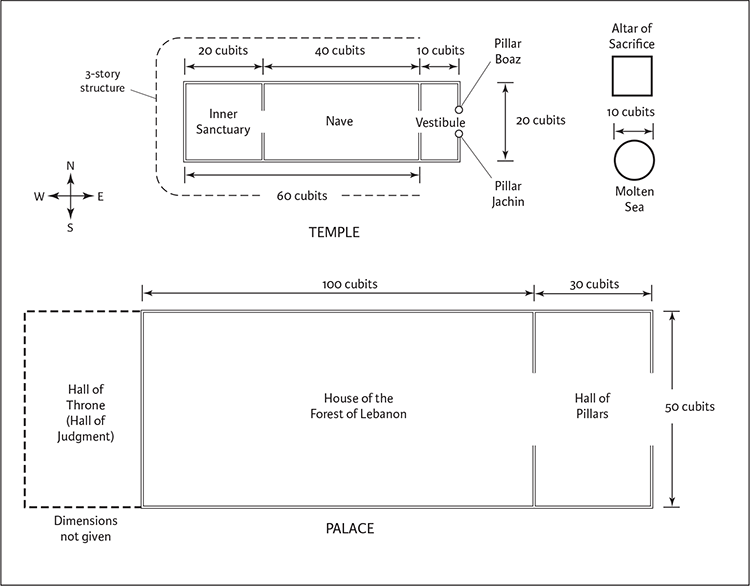
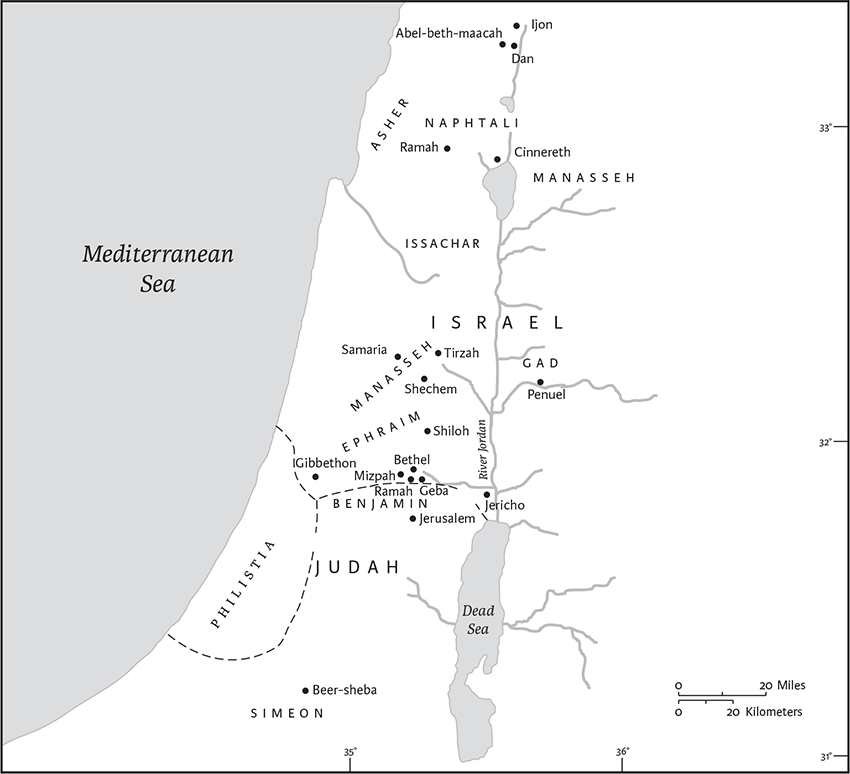
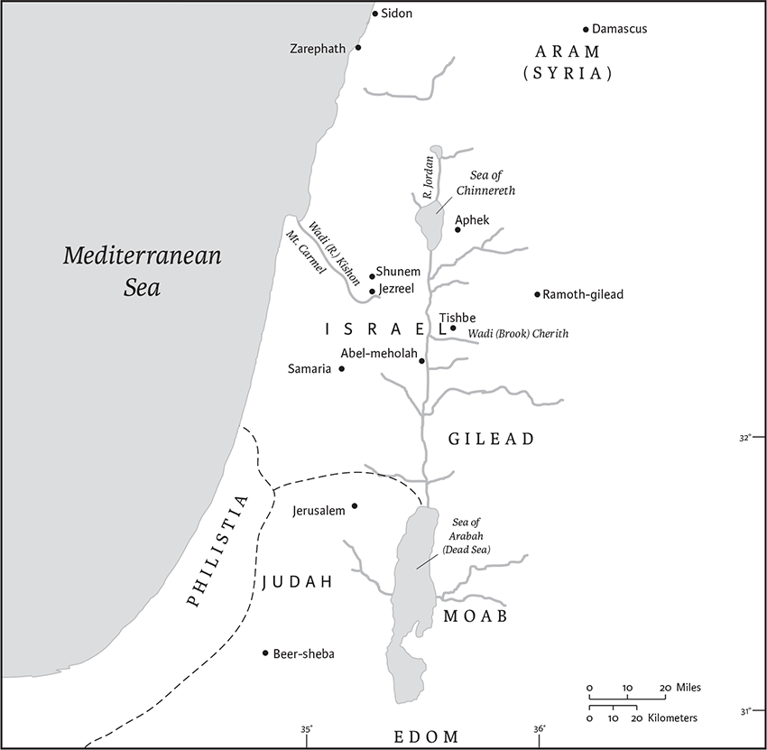

1 Kings
3 Kingdoms in Greek
Name
The books of Kings, which describe the period from the death of King David through the aftermath of the destruction of the First Temple in 586 bce, were originally a single book. It was divided into two in the Greek Bible because it was too long to fit easily on one scroll. This division artificially splits up the stories of the Israelite king Ahaziah and those of the prophet Elijah. What is now 2 Kings 1.1 was considered a suitable book opening since its wording, “after the death of Ahab,” parallels the opening of the books of Joshua (“after the death of Moses”), Judges (“after the death of Joshua”), and 2 Samuel (“after the death of Saul”). In the Greek Bible (the Septuagint, abbreviated LXX), 1 and 2 Kings are called 3 and 4 Basileiōn (“reigns” or “dynasties”); the Greek translators linked Samuel and Kings (the books of Samuel are called 1 and 2 Basileiōn) because they narrate the story of the Israelite and Judean monarchy from its beginning until its end; indeed, 1 Kings opens with the death of David, the main character of the book of Samuel.
Canonical Status and Location
In the Christian canon, 1 and 2 Kings belong to the “Historical Books” and are followed by the books of Chronicles, which offer an alternative account of the period of the monarchy. In the Jewish Bible, the book of Kings closes the first part of the Prophets, the “Former Prophets” comprised of Joshua, Judges, Samuel, and Kings. Although prophetic figures play a major role in these books, they are quite different from the “Latter Prophets” that comprise the prophetic books. The Former Prophets, however, provide the necessary background for understanding the oracles in the “Latter Prophets.”
Authorship
Jewish tradition (b. B. Bat. 14b–15a) regards the prophet Jeremiah, a contemporary of the last kings of Judah, as the author of the book of Kings, perhaps because of stylistic similarities between the books of Kings and Jeremiah. Modern scholars have called this style “Deuteronomistic” because it is based on the key vocabulary and theological concepts of Deuteronomy. This style is also found in Joshua, Judges, and Samuel, and thus most scholars call the books of Deuteronomy through Kings the “Deuteronomistic History.” The book of Kings reflects the reworking of annals and oral traditions, and the composition of new material, by these Deuteronomists, who even embedded references to the Babylonian exile in the book of Deuteronomy itself (see esp. Deut 6.15; 28.47–68).
Dates of Composition and Literary History
The first Deuteronomistic edition of the book of Kings as well as of the book of Deuteronomy were probably written in approximately 620 bce, during the reign of the Judean king Josiah. According to 2 Kings 22–23, this king undertook a religious and a political reform aimed at making Jerusalem the only legitimate sanctuary for the worship of the Lord. This reform follows the main theological ideas expressed in Deuteronomy, namely the centralization of worship at the Jerusalem Temple and the exclusive veneration of the Lord, the God who had chosen Israel as his special property.
The scribes who edited the books of Kings under the patronage of King Josiah wanted to show that he was in fact the best of all Judean kings, who fulfilled God’s will through his religious and political actions. This edition’s conclusion was probably 2 Kings 23.25: “Before him there was no king like him, who turned to the Lord with all his heart, with all his soul, and with all his might,” which corresponds exactly to the exhortation of the book of Deuteronomy: “You shall love the Lord your God with all your heart, and with all your soul, and with all your might” (Deut 6.5). This optimistic work was revised after the destruction of Jerusalem in 586 bce; it was updated to incorporate the final kings of Judah, and to explain the reasons for that calamity. These updates in the mid‐to late sixth century bce, during the Babylonian exile or the first decades of the Persian period, offered a “theodicy,” an explanation of how the Lord, the God of Israel, could cause such evil to his own people. These late Deuteronomistic editors explain that the fall of Jerusalem and the destruction of the Temple are not due to the Lord’s inability to defend his nation against its enemies; on the contrary, the Lord himself had called the Babylonians to invade Judah in order to punish it because it did not conform to divine law as expressed in the book of Deuteronomy.
The Deuteronomistic authors and editors who edited the books of Kings integrated several older sources or independent documents into their work, including the “Book of the Acts of Solomon” (1 Kings 11.41), and “the Book of the Annals of the Kings of Israel” (e.g., 1 Kings 14.19) and “the Book of the Annals of the Kings of Judah” (e.g., 1 Kings 14.29), from the courts of Samaria and Jerusalem. The final event related in 2 Kings is the improvement of the status of King Jehoiachin, who was imprisoned in Babylon; this occurred under the Babylonian king Evil‐merodach (Amel‐Marduk), who reigned briefly in 562–561 bce. Scholars debate whether this notice is a theological justification of the end of monarchy and the exile, or expresses hope for the renewal of the Davidic dynasty.
Although many scholars think that the account of Jehoiachin’s release indicates that the book was written shortly after this date, it likely underwent further revision during the Persian period. For example, in the last revision of Solomon’s dedication of the Temple (1 Kings 8), the Temple becomes a kind of “qibla,” indicating the direction in which everyone should pray, reflecting the needs of the Diaspora communities in Babylon, Egypt, and elsewhere. During this period, Kings was also revised in order to fit into the “prophetic canon.” This happened after the book of Deuteronomy was seen not as the introduction to the Deuteronomistic History, but as conclusion of the Pentateuch. The prophetic stories about Elijah and Elisha, which existed before as independent scrolls, were now integrated into the books of Kings in order to make it more prophetic; in its current form, approximately half of Kings contains prophetic narratives.
Structure and Contents
The book of Kings tells the story of the Judean and Israelite monarchies from the united monarchy under Solomon (1 Kings 1–11) and its division after his death into the Northern Kingdom of I srael and the Southern Kingdom of Judah (1 Kings 12), until the end of Israel (2 Kings 17) and of Judah (2 Kings 24–25). First Kings covers the time from Solomon until King Jehoshaphat of Judah and King Ahaziah of Israel. The account of the divided monarchy, after the death of Solomon, is narrated (until 2 Kings 17) in a synchronistic fashion, which correlated the Northern and Southern Kingdoms. The reign of each king is framed by introductory and final formulas. The information about Judean kings is more extensive, indicating that the Judean scribes likely had more information about their own kings. The formulas have the following pattern:
| Judean kings | Israelite kings |
|---|---|
| Introductory synchronism | Introductory synchronism |
| The king’s age at his enthronement | – |
| Length of reign | Length of reign |
| Name of his mother | |
| Theological judgment | Theological judgment |
| Final reference to the annals of the kings of Judah | Final reference to the annals of the kings of Israel |
| Death of the king | Death of the king |
| Burial | – |
| Name of the successor | Name of the successor |
Interpretation
The book of Kings is historiography in the sense that it presents a chronologically arranged story from King Solomon until the end of the monarchy, covering roughly from 970 to 560 bce; beginning with the reign of Rehoboam, king of Judah in the late tenth century bce, many of the events and individuals in 1–2 Kings are also mentioned in nonbiblical sources. But Kings is not historiography in the ancient Greek or modern meaning of the term. Kings is an anonymous work; in contrast to the ancient Greek historians Herodotus and Thucydides, no author speaks in the first person, presenting sources and evaluating information. There is little interest about “how things really happened.” For the authors of Kings, the God of Israel is the major actor in the history of the Judean and Israelite kings. The kings whose reigns are positively evaluated are monarchs who follow God’s will, whereas the unfaithful kings provoke God’s punishment and, in some cases, are ultimately responsible for the fall of Samaria and Jerusalem. Kings shows no interest in an objective, comprehensive, and complete recounting of the past. Kings such as Hezekiah, whose hazardous geopolitical policies may appear strange to modern readers, are presented very positively, whereas kings with a long, apparently peaceful reign, such as Manasseh, are judged very negatively. The main interest of the authors of Kings is not the political, economic, and military achievements of kings, but their religious attitude, especially as expressed through exclusive worship of the Lord in the Jerusalem Temple. Jeroboam, the first king of the Northern Kingdom after its separation from Judah, is described as the founder of two sanctuaries in Dan and Bethel, which are presented as illegitimate competitors with the Jerusalem Temple (1 Kings 12); consequently, all subsequent northern kings are systematically blamed for “Jeroboam’s sin.” The southern kings are compared to their “father” David (1 Kings 15.3,11; 2 Kings 14.3; 16.2; 18.3; 22.2) and are evaluated based on their loyalty to the Jerusalem Temple and their condemnation of the other places of worship (especially the “high places”).
An early form of the books of Samuel and Kings triggered an interpretative rewriting, namely the books of Chronicles, which offers an alternative account of the Judean monarchy. It omits almost everything of the story of the Northern Kingdom, and ends with the decree of the Persian king Cyrus in 538, allowing the Judeans to return from exile and to rebuild the Jerusalem Temple.
Thomas Römer
1 King David was old and advanced in years; and although they covered him with clothes, he could not get warm. 2So his servants said to him, “Let a young virgin be sought for my lord the king, and let her wait on the king, and be his attendant; let her lie in your bosom, so that my lord the king may be warm.” 3So they searched for a beautiful girl throughout all the territory of Israel, and found Abishag the Shunammite, and brought her to the king. 4The girl was very beautiful. She became the king’s attendant and served him, but the king did not know her sexually.
5Now Adonijah son of Haggith exalted himself, saying, “I will be king”; he prepared for himself chariots and horsemen, and fifty men to run before him. 6His father had never at any time displeased him by asking, “Why have you done thus and so?” He was also a very handsome man, and he was born next after Absalom. 7He conferred with Joab son of Zeruiah and with the priest Abiathar, and they supported Adonijah. 8But the priest Zadok, and Benaiah son of Jehoiada, and the prophet Nathan, and Shimei, and Rei, and David’s own warriors did not side with Adonijah.
9Adonijah sacrificed sheep, oxen, and fatted cattle by the stone Zoheleth, which is beside En‐rogel, and he invited all his brothers, the king’s sons, and all the royal officials of Judah, 10but he did not invite the prophet Nathan or Benaiah or the warriors or his brother Solomon.
11Then Nathan said to Bathsheba, Solomon’s mother, “Have you not heard that Adonijah son of Haggith has become king and our lord David does not know it? 12Now therefore come, let me give you advice, so that you may save your own life and the life of your son Solomon. 13Go in at once to King David, and say to him, ‘Did you not, my lord the king, swear to your servant, saying: Your son Solomon shall succeed me as king, and he shall sit on my throne? Why then is Adonijah king?’ 14Then while you are still there speaking with the king, I will come in after you and confirm your words.”
15So Bathsheba went to the king in his room. The king was very old; Abishag the Shunammite was attending the king. 16Bathsheba bowed and did obeisance to the king, and the king said, “What do you wish?” 17She said to him, “My lord, you swore to your servant by the Lord your God, saying: Your son Solomon shall succeed me as king, and he shall sit on my throne. 18But now suddenly Adonijah has become king, though you, my lord the king, do not know it. 19He has sacrificed oxen, fatted cattle, and sheep in abundance, and has invited all the children of the king, the priest Abiathar, and Joab the commander of the army; but your servant Solomon he has not invited. 20But you, my lord the king—the eyes of all Israel are on you to tell them who shall sit on the throne of my lord the king after him. 21Otherwise it will come to pass, when my lord the king sleeps with his ancestors, that my son Solomon and I will be counted offenders.”
22While she was still speaking with the king, the prophet Nathan came in. 23The king was told, “Here is the prophet Nathan.” When he came in before the king, he did obeisance to the king, with his face to the ground. 24Nathan said, “My lord the king, have you said, ‘Adonijah shall succeed me as king, and he shall sit on my throne’? 25For today he has gone down and has sacrificed oxen, fatted cattle, and sheep in abundance, and has invited all the king’s children, Joab the commander a of the army, and the priest Abiathar, who are now eating and drinking before him, and saying, ‘Long live King Adonijah!’ 26But he did not invite me, your servant, and the priest Zadok, and Benaiah son of Jehoiada, and your servant Solomon. 27Has this thing been brought about by my lord the king and you have not let your servants know who should sit on the throne of my lord the king after him?”
28King David answered, “Summon Bathsheba to me.” So she came into the king’s presence, and stood before the king. 29The king swore, saying, “As the Lord lives, who has saved my life from every adversity, 30as I swore to you by the Lord, the God of Israel, ‘Your son Solomon shall succeed me as king, and he shall sit on my throne in my place,’ so will I do this day.” 31Then Bathsheba bowed with her face to the ground, and did obeisance to the king, and said, “May my lord King David live forever!”
32King David said, “Summon to me the priest Zadok, the prophet Nathan, and Benaiah son of Jehoiada.” When they came before the king, 33the king said to them, “Take with you the servants of your lord, and have my son Solomon ride on my own mule, and bring him down to Gihon. 34There let the priest Zadok and the prophet Nathan anoint him king over Israel; then blow the trumpet, and say, ‘Long live King Solomon!’ 35You shall go up following him. Let him enter and sit on my throne; he shall be king in my place; for I have appointed him to be ruler over Israel and over Judah.” 36Benaiah son of Jehoiada answered the king, “Amen! May the Lord, the God of my lord the king, so ordain. 37As the Lord has been with my lord the king, so may he be with Solomon, and make his throne greater than the throne of my lord King David.”
38So the priest Zadok, the prophet Nathan, and Benaiah son of Jehoiada, and the Cherethites and the Pelethites, went down and had Solomon ride on King David’s mule, and led him to Gihon. 39There the priest Zadok took the horn of oil from the tent and anointed Solomon. Then they blew the trumpet, and all the people said, “Long live King Solomon!” 40And all the people went up following him, playing on pipes and rejoicing with great joy, so that the earth quaked at their noise.
41Adonijah and all the guests who were with him heard it as they finished feasting. When Joab heard the sound of the trumpet, he said, “Why is the city in an uproar?” 42While he was still speaking, Jonathan son of the priest Abiathar arrived. Adonijah said, “Come in, for you are a worthy man and surely you bring good news.” 43Jonathan answered Adonijah, “No, for our lord King David has made Solomon king; 44the king has sent with him the priest Zadok, the prophet Nathan, and Benaiah son of Jehoiada, and the Cherethites and the Pelethites; and they had him ride on the king’s mule; 45the priest Zadok and the prophet Nathan have anointed him king at Gihon; and they have gone up from there rejoicing, so that the city is in an uproar. This is the noise that you heard. 46Solomon now sits on the royal throne. 47Moreover the king’s servants came to congratulate our lord King David, saying, ‘May God make the name of Solomon more famous than yours, and make his throne greater than your throne.’ The king bowed in worship on the bed 48and went on to pray thus, ‘Blessed be the Lord, the God of Israel, who today has granted one of my offspringa to sit on my throne and permitted me to witness it.’”
49Then all the guests of Adonijah got up trembling and went their own ways. 50Adonijah, fearing Solomon, got up and went to grasp the horns of the altar. 51Solomon was informed, “Adonijah is afraid of King Solomon; see, he has laid hold of the horns of the altar, saying, ‘Let King Solomon swear to me first that he will not kill his servant with the sword.’” 52So Solomon responded, “If he proves to be a worthy man, not one of his hairs shall fall to the ground; but if wickedness is found in him, he shall die.” 53Then King Solomon sent to have him brought down from the altar. He came to do obeisance to King Solomon; and Solomon said to him, “Go home.”
2 When David’s time to die drew near, he charged his son Solomon, saying: 2“I am about to go the way of all the earth. Be strong, be courageous, 3and keep the charge of the Lord your God, walking in his ways and keeping his statutes, his commandments, his ordinances, and his testimonies, as it is written in the law of Moses, so that you may prosper in all that you do and wherever you turn. 4Then the Lord will establish his word that he spoke concerning me: ‘If your heirs take heed to their way, to walk before me in faithfulness with all their heart and with all their soul, there shall not fail you a successor on the throne of Israel.’
5“Moreover you know also what Joab son of Zeruiah did to me, how he dealt with the two commanders of the armies of Israel, Abner son of Ner, and Amasa son of Jether, whom he murdered, retaliating in time of peace for blood that had been shed in war, and putting the blood of war on the belt around his waist, and on the sandals on his feet. 6Act therefore according to your wisdom, but do not let his gray head go down to Sheol in peace. 7Deal loyally, however, with the sons of Barzillai the Gileadite, and let them be among those who eat at your table; for with such loyalty they met me when I fled from your brother Absalom. 8There is also with you Shimei son of Gera, the Benjaminite from Bahurim, who cursed me with a terrible curse on the day when I went to Mahanaim; but when he came down to meet me at the Jordan, I swore to him by the Lord, ‘I will not put you to death with the sword.’ 9Therefore do not hold him guiltless, for you are a wise man; you will know what you ought to do to him, and you must bring his gray head down with blood to Sheol.”
10Then David slept with his ancestors, and was buried in the city of David. 11The time that David reigned over Israel was forty years; he reigned seven years in Hebron, and thirty‐three years in Jerusalem. 12So Solomon sat on the throne of his father David; and his kingdom was firmly established.
13Then Adonijah son of Haggith came to Bathsheba, Solomon’s mother. She asked, “Do you come peaceably?” He said, “Peaceably.” 14Then he said, “May I have a word with you?” She said, “Go on.” 15He said, “You know that the kingdom was mine, and that all Israel expected me to reign; however, the kingdom has turned about and become my brother’s, for it was his from the Lord. 16And now I have one request to make of you; do not refuse me.” She said to him, “Go on.” 17He said, “Please ask King Solomon—he will not refuse you—to give me Abishag the Shunammite as my wife.” 18Bathsheba said, “Very well; I will speak to the king on your behalf.”
19So Bathsheba went to King Solomon, to speak to him on behalf of Adonijah. The king rose to meet her, and bowed down to her; then he sat on his throne, and had a throne brought for the king’s mother, and she sat on his right. 20Then she said, “I have one small request to make of you; do not refuse me.” And the king said to her, “Make your request, my mother; for I will not refuse you.” 21She said, “Let Abishag the Shunammite be given to your brother Adonijah as his wife.”
22King Solomon answered his mother, “And why do you ask Abishag the Shunammite for Adonijah? Ask for him the kingdom as well! For he is my elder brother; ask not only for him but also for the priest Abiathar and for Joab son of Zeruiah!” 23Then King Solomon swore by the Lord, “So may God do to me, and more also, for Adonijah has devised this scheme at the risk of his life! 24Now therefore as the Lord lives, who has established me and placed me on the throne of my father David, and who has made me a house as he promised, today Adonijah shall be put to death.” 25So King Solomon sent Benaiah son of Jehoiada; he struck him down, and he died.
26The king said to the priest Abiathar, “Go to Anathoth, to your estate; for you deserve death. But I will not at this time put you to death, because you carried the ark of the Lord God before my father David, and because you shared in all the hardships my father endured.” 27So Solomon banished Abiathar from being priest to the Lord, thus fulfilling the word of the Lord that he had spoken concerning the house of Eli in Shiloh.
28When the news came to Joab—for Joab had supported Adonijah though he had not supported Absalom—Joab fled to the tent of the Lord and grasped the horns of the altar. 29When it was told King Solomon, “Joab has fled to the tent of the Lord and now is beside the altar,” Solomon sent Benaiah son of Jehoiada, saying, “Go, strike him down.” 30So Benaiah came to the tent of the Lord and said to him, “The king commands, ‘Come out.’” But he said, “No, I will die here.” Then Benaiah brought the king word again, saying, “Thus said Joab, and thus he answered me.” 31The king replied to him, “Do as he has said, strike him down and bury him; and thus take away from me and from my father’s house the guilt for the blood that Joab shed without cause. 32The Lord will bring back his bloody deeds on his own head, because, without the knowledge of my father David, he attacked and killed with the sword two men more righteous and better than himself, Abner son of Ner, commander of the army of Israel, and Amasa son of Jether, commander of the army of Judah. 33So shall their blood come back on the head of Joab and on the head of his descendants forever; but to David, and to his descendants, and to his house, and to his throne, there shall be peace from the Lord forevermore.” 34Then Benaiah son of Jehoiada went up and struck him down and killed him; and he was buried at his own house near the wilderness. 35The king put Benaiah son of Jehoiada over the army in his place, and the king put the priest Zadok in the place of Abiathar.
36Then the king sent and summoned Shimei, and said to him, “Build yourself a house in Jerusalem, and live there, and do not go out from there to any place whatever. 37For on the day you go out, and cross the Wadi Kidron, know for certain that you shall die; your blood shall be on your own head.” 38And Shimei said to the king, “The sentence is fair; as my lord the king has said, so will your servant do.” So Shimei lived in Jerusalem many days.
39But it happened at the end of three years that two of Shimei’s slaves ran away to King Achish son of Maacah of Gath. When it was told Shimei, “Your slaves are in Gath,” 40Shimei arose and saddled a donkey, and went to Achish in Gath, to search for his slaves; Shimei went and brought his slaves from Gath. 41When Solomon was told that Shimei had gone from Jerusalem to Gath and returned, 42the king sent and summoned Shimei, and said to him, “Did I not make you swear by the Lord, and solemnly adjure you, saying, ‘Know for certain that on the day you go out and go to any place whatever, you shall die’? And you said to me, ‘The sentence is fair; I accept.’ 43Why then have you not kept your oath to the Lord and the commandment with which I charged you?” 44The king also said to Shimei, “You know in your own heart all the evil that you did to my father David; so the Lord will bring back your evil on your own head. 45But King Solomon shall be blessed, and the throne of David shall be established before the Lord forever.” 46Then the king commanded Benaiah son of Jehoiada; and he went out and struck him down, and he died.
So the kingdom was established in the hand of Solomon.
3 Solomon made a marriage alliance with Pharaoh king of Egypt; he took Pharaoh’s daughter and brought her into the city of David, until he had finished building his own house and the house of the Lord and the wall around Jerusalem. 2The people were sacrificing at the high places, however, because no house had yet been built for the name of the Lord.
3Solomon loved the Lord, walking in the statutes of his father David; only, he sacrificed and offered incense at the high places. 4The king went to Gibeon to sacrifice there, for that was the principal high place; Solomon used to offer a thousand burnt offerings on that altar. 5At Gibeon the Lord appeared to Solomon in a dream by night; and God said, “Ask what I should give you.” 6And Solomon said, “You have shown great and steadfast love to your servant my father David, because he walked before you in faithfulness, in righteousness, and in uprightness of heart toward you; and you have kept for him this great and steadfast love, and have given him a son to sit on his throne today. 7And now, O Lord my God, you have made your servant king in place of my father David, although I am only a little child; I do not know how to go out or come in. 8And your servant is in the midst of the people whom you have chosen, a great people, so numerous they cannot be numbered or counted. 9Give your servant therefore an understanding mind to govern your people, able to discern between good and evil; for who can govern this your great people?”
10It pleased the Lord that Solomon had asked this. 11God said to him, “Because you have asked this, and have not asked for yourself long life or riches, or for the life of your enemies, but have asked for yourself understanding to discern what is right, 12I now do according to your word. Indeed I give you a wise and discerning mind; no one like you has been before you and no one like you shall arise after you. 13I give you also what you have not asked, both riches and honor all your life; no other king shall compare with you. 14If you will walk in my ways, keeping my statutes and my commandments, as your father David walked, then I will lengthen your life.”
15Then Solomon awoke; it had been a dream. He came to Jerusalem where he stood before the ark of the covenant of the Lord. He offered up burnt offerings and offerings of well‐being, and provided a feast for all his servants.
16Later, two women who were prostitutes came to the king and stood before him. 17The one woman said, “Please, my lord, this woman and I live in the same house; and I gave birth while she was in the house. 18Then on the third day after I gave birth, this woman also gave birth. We were together; there was no one else with us in the house, only the two of us were in the house. 19Then this woman’s son died in the night, because she lay on him. 20She got up in the middle of the night and took my son from beside me while your servant slept. She laid him at her breast, and laid her dead son at my breast. 21When I rose in the morning to nurse my son, I saw that he was dead; but when I looked at him closely in the morning, clearly it was not the son I had borne.” 22But the other woman said, “No, the living son is mine, and the dead son is yours.” The first said, “No, the dead son is yours, and the living son is mine.” So they argued before the king.
23Then the king said, “The one says, ‘This is my son that is alive, and your son is dead’; while the other says, ‘Not so! Your son is dead, and my son is the living one.’” 24So the king said, “Bring me a sword,” and they brought a sword before the king. 25The king said, “Divide the living boy in two; then give half to the one, and half to the other.” 26But the woman whose son was alive said to the king—because compassion for her son burned within her—“Please, my lord, give her the living boy; certainly do not kill him!” The other said, “It shall be neither mine nor yours; divide it.” 27Then the king responded: “Give the first woman the living boy; do not kill him. She is his mother.” 28All Israel heard of the judgment that the king had rendered; and they stood in awe of the king, because they perceived that the wisdom of God was in him, to execute justice.
4 King Solomon was king over all Israel, 2and these were his high officials: Azariah son of Zadok was the priest; 3Elihoreph and Ahijah sons of Shisha were secretaries; Jehoshaphat son of Ahilud was recorder; 4Benaiah son of Jehoiada was in command of the army; Zadok and Abiathar were priests; 5Azariah son of Nathan was over the officials; Zabud son of Nathan was priest and king’s friend; 6Ahishar was in charge of the palace; and Adoniram son of Abda was in charge of the forced labor.
7Solomon had twelve officials over all Israel, who provided food for the king and his household; each one had to make provision for one month in the year. 8These were their names: Ben‐hur, in the hill country of Ephraim; 9Ben‐deker, in Makaz, Shaalbim, Beth‐shemesh, and Elon‐bethhanan; 10Ben‐hesed, in Arubboth (to him belonged Socoh and all the land of Hepher); 11Ben‐abinadab, in all Naphath‐dor (he had Taphath, Solomon’s daughter, as his wife); 12Baana son of Ahilud, in Taanach, Megiddo, and all Beth‐shean, which is beside Zarethan below Jezreel, and from Beth‐shean to Abel‐meholah, as far as the other side of Jokmeam; 13Ben‐geber, in Ramoth‐gilead (he had the villages of Jair son of Manasseh, which are in Gilead, and he had the region of Argob, which is in Bashan, sixty great cities with walls and bronze bars); 14Ahinadab son of Iddo, in Mahanaim; 15Ahimaaz, in Naphtali (he had taken Basemath, Solomon’s daughter, as his wife); 16Baana son of Hushai, in Asher and Bealoth; 17Jehoshaphat son of Paruah, in Issachar; 18Shimei son of Ela, in Benjamin; 19Geber son of Uri, in the land of Gilead, the country of King Sihon of the Amorites and of King Og of Bashan. And there was one official in the land of Judah.
20Judah and Israel were as numerous as the sand by the sea; they ate and drank and were happy. 21aSolomon was sovereign over all the kingdoms from the Euphrates to the land of the Philistines, even to the border of Egypt; they brought tribute and served Solomon all the days of his life.
22Solomon’s provision for one day was thirty cors of choice flour, and sixty cors of meal, 23ten fat oxen, and twenty pasturefed cattle, one hundred sheep, besides deer, gazelles, roebucks, and fatted fowl. 24For he had dominion over all the region west of the Euphrates from Tiphsah to Gaza, over all the kings west of the Euphrates; and he had peace on all sides. 25During Solomon’s lifetime Judah and Israel lived in safety, from Dan even to Beer‐sheba, all of them under their vines and fig trees. 26Solomon also had forty thousand stalls of horses for his chariots, and twelve thousand horsemen. 27Those officials supplied provisions for King Solomon and for all who came to King Solomon’s table, each one in his month; they let nothing be lacking. 28They also brought to the required place barley and straw for the horses and swift steeds, each according to his charge.
29God gave Solomon very great wisdom, discernment, and breadth of understanding as vast as the sand on the seashore, 30so that Solomon’s wisdom surpassed the wisdom of all the people of the east, and all the wisdom of Egypt. 31He was wiser than anyone else, wiser than Ethan the Ezrahite, and Heman, Calcol, and Darda, children of Mahol; his fame spread throughout all the surrounding nations. 32He composed three thousand proverbs, and his songs numbered a thousand and five. 33He would speak of trees, from the cedar that is in the Lebanon to the hyssop that grows in the wall; he would speak of animals, and birds, and reptiles, and fish. 34People came from all the nations to hear the wisdom of Solomon; they came from all the kings of the earth who had heard of his wisdom.
5a Now King Hiram of Tyre sent his servants to Solomon, when he heard that they had anointed him king in place of his father; for Hiram had always been a friend to David. 2Solomon sent word to Hiram, saying, 3“You know that my father David could not build a house for the name of the Lord his God because of the warfare with which his enemies surrounded him, until the Lord put them under the soles of his feet.b 4But now the Lord my God has given me rest on every side; there is neither adversary nor misfortune. 5So I intend to build a house for the name of the Lord my God, as the Lord said to my father David, ‘Your son, whom I will set on your throne in your place, shall build the house for my name.’ 6Therefore command that cedars from the Lebanon be cut for me. My servants will join your servants, and I will give you whatever wages you set for your servants; for you know that there is no one among us who knows how to cut timber like the Sidonians.”
7When Hiram heard the words of Solomon, he rejoiced greatly, and said, “Blessed be the Lord today, who has given to David a wise son to be over this great people.” 8Hiram sent word to Solomon, “I have heard the message that you have sent to me; I will fulfill all your needs in the matter of cedar and cypress timber. 9My servants shall bring it down to the sea from the Lebanon; I will make it into rafts to go by sea to the place you indicate. I will have them broken up there for you to take away. And you shall meet my needs by providing food for my household.” 10So Hiram supplied Solomon’s every need for timber of cedar and cypress. 11Solomon in turn gave Hiram twenty thousand cors of wheat as food for his household, and twenty cors of fine oil. Solomon gave this to Hiram year by year. 12So the Lord gave Solomon wisdom, as he promised him. There was peace between Hiram and Solomon; and the two of them made a treaty.
13King Solomon conscripted forced labor out of all Israel; the levy numbered thirty thousand men. 14He sent them to the Lebanon, ten thousand a month in shifts; they would be a month in the Lebanon and two months at home; Adoniram was in charge of the forced labor. 15Solomon also had seventy thousand laborers and eighty thousand stonecutters in the hill country, 16besides Solomon’s three thousand three hundred supervisors who were over the work, having charge of the people who did the work. 17At the king’s command, they quarried out great, costly stones in order to lay the foundation of the house with dressed stones. 18So Solomon’s builders and Hiram’s builders and the Gebalites did the stonecutting and prepared the timber and the stone to build the house.
6 In the four hundred eightieth year after the Israelites came out of the land of Egypt, in the fourth year of Solomon’s reign over Israel, in the month of Ziv, which is the second month, he began to build the house of the Lord. 2The house that King Solomon built for the Lord was sixty cubits long, twenty cubits wide, and thirty cubits high. 3The vestibule in front of the nave of the house was twenty cubits wide, across the width of the house. Its depth was ten cubits in front of the house. 4For the house he made windows with recessed frames.a 5He also built a structure against the wall of the house, running around the walls of the house, both the nave and the inner sanctuary; and he made side chambers all around. 6The lowest storya was five cubits wide, the middle one was six cubits wide, and the third was seven cubits wide; for around the outside of the house he made offsets on the wall in order that the supporting beams should not be inserted into the walls of the house.

The Temple and palace of Solomon according to First Kings
7The house was built with stone finished at the quarry, so that neither hammer nor ax nor any tool of iron was heard in the temple while it was being built.
8The entrance for the middle story was on the south side of the house: one went up by winding stairs to the middle story, and from the middle story to the third. 9So he built the house, and finished it; he roofed the house with beams and planks of cedar. 10He built the structure against the whole house, each storyb five cubits high, and it was joined to the house with timbers of cedar.
11Now the word of the Lord came to Solomon, 12“Concerning this house that you are building, if you will walk in my statutes, obey my ordinances, and keep all my commandments by walking in them, then I will establish my promise with you, which I made to your father David. 13I will dwell among the children of Israel, and will not forsake my people Israel.”
14So Solomon built the house, and finished it. 15He lined the walls of the house on the inside with boards of cedar; from the floor of the house to the rafters of the ceiling, he covered them on the inside with wood; and he covered the floor of the house with boards of cypress. 16He built twenty cubits of the rear of the house with boards of cedar from the floor to the rafters, and he built this within as an inner sanctuary, as the most holy place. 17The house, that is, the nave in front of the inner sanctuary, was forty cubits long. 18The cedar within the house had carvings of gourds and open flowers; all was cedar, no stone was seen. 19The inner sanctuary he prepared in the innermost part of the house, to set there the ark of the covenant of the Lord. 20The interior of the inner sanctuary was twenty cubits long, twenty cubits wide, and twenty cubits high; he overlaid it with pure gold. He also overlaid the altar with cedar.a 21Solomon overlaid the inside of the house with pure gold, then he drew chains of gold across, in front of the inner sanctuary, and overlaid it with gold. 22Next he overlaid the whole house with gold, in order that the whole house might be perfect; even the whole altar that belonged to the inner sanctuary he overlaid with gold.
23In the inner sanctuary he made two cherubim of olivewood, each ten cubits high. 24Five cubits was the length of one wing of the cherub, and five cubits the length of the other wing of the cherub; it was ten cubits from the tip of one wing to the tip of the other. 25The other cherub also measured ten cubits; both cherubim had the same measure and the same form. 26The height of one cherub was ten cubits, and so was that of the other cherub. 27He put the cherubim in the innermost part of the house; the wings of the cherubim were spread out so that a wing of one was touching the one wall, and a wing of the other cherub was touching the other wall; their other wings toward the center of the house were touching wing to wing. 28He also overlaid the cherubim with gold.
29He carved the walls of the house all around about with carved engravings of cherubim, palm trees, and open flowers, in the inner and outer rooms. 30The floor of the house he overlaid with gold, in the inner and outer rooms.
31For the entrance to the inner sanctuary he made doors of olivewood; the lintel and the doorposts were five‐sided.a32He covered the two doors of olivewood with carvings of cherubim, palm trees, and open flowers; he overlaid them with gold, and spread gold on the cherubim and on the palm trees.
33So also he made for the entrance to the nave doorposts of olivewood, four‐sided each, 34and two doors of cypress wood; the two leaves of the one door were folding, and the two leaves of the other door were folding. 35He carved cherubim, palm trees, and open flowers, overlaying them with gold evenly applied upon the carved work. 36He built the inner court with three courses of dressed stone to one course of cedar beams.
37In the fourth year the foundation of the house of the Lord was laid, in the month of Ziv. 38In the eleventh year, in the month of Bul, which is the eighth month, the house was finished in all its parts, and according to all its specifications. He was seven years in building it.
7 Solomon was building his own house thirteen years, and he finished his entire house.
2He built the House of the Forest of the Lebanon one hundred cubits long, fifty cubits wide, and thirty cubits high, built on four rows of cedar pillars, with cedar beams on the pillars. 3It was roofed with cedar on the fortyfive rafters, fifteen in each row, which were on the pillars. 4There were window frames in the three rows, facing each other in the three rows. 5All the doorways and doorposts had four‐sided frames, opposite, facing each other in the three rows.
6He made the Hall of Pillars fifty cubits long and thirty cubits wide. There was a porch in front with pillars, and a canopy in front of them.
7He made the Hall of the Throne where he was to pronounce judgment, the Hall of Justice, covered with cedar from floor to floor.
8His own house where he would reside, in the other court back of the hall, was of the same construction. Solomon also made a house like this hall for Pharaoh’s daughter, whom he had taken in marriage.
9All these were made of costly stones, cut according to measure, sawed with saws, back and front, from the foundation to the coping, and from outside to the great court. 10The foundation was of costly stones, huge stones, stones of eight and ten cubits. 11There were costly stones above, cut to measure, and cedarwood. 12The great court had three courses of dressed stone to one layer of cedar beams all around; so had the inner court of the house of the Lord, and the vestibule of the house.
13Now King Solomon invited and received Hiram from Tyre. 14He was the son of a widow of the tribe of Naphtali, whose father, a man of Tyre, had been an artisan in bronze; he was full of skill, intelligence, and knowledge in working bronze. He came to King Solomon, and did all his work.
15He cast two pillars of bronze. Eighteen cubits was the height of the one, and a cord of twelve cubits would encircle it; the second pillar was the same.a 16He also made two capitals of molten bronze, to set on the tops of the pillars; the height of the one capital was five cubits, and the height of the other capital was five cubits. 17There were nets of checker work with wreaths of chain work for the capitals on the tops of the pillars; sevenb for the one capital, and sevenb for the other capital. 18He made the columns with two rows around each latticework to cover the capitals that were above the pomegranates; he did the same with the other capital. 19Now the capitals that were on the tops of the pillars in the vestibule were of lily‐work, four cubits high. 20The capitals were on the two pillars and also above the rounded projection that was beside the latticework; there were two hundred pomegranates in rows all around; and so with the other capital. 21He set up the pillars at the vestibule of the temple; he set up the pillar on the south and called it Jachin; and he set up the pillar on the north and called it Boaz. 22On the tops of the pillars was lily‐work. Thus the work of the pillars was finished.
23Then he made the molten sea; it was round, ten cubits from brim to brim, and five cubits high. A line of thirty cubits would encircle it completely. 24Under its brim were panels all around it, each of ten cubits, surrounding the sea; there were two rows of panels, cast when it was cast. 25It stood on twelve oxen, three facing north, three facing west, three facing south, and three facing east; the sea was set on them. The hindquarters of each were toward the inside. 26Its thickness was a handbreadth; its brim was made like the brim of a cup, like the flower of a lily; it held two thousand baths.a
27He also made the ten stands of bronze; each stand was four cubits long, four cubits wide, and three cubits high. 28This was the construction of the stands: they had borders; the borders were within the frames; 29on the borders that were set in the frames were lions, oxen, and cherubim. On the frames, both above and below the lions and oxen, there were wreaths of beveled work. 30Each stand had four bronze wheels and axles of bronze; at the four corners were supports for a basin. The supports were cast with wreaths at the side of each. 31Its opening was within the crown whose height was one cubit; its opening was round, as a pedestal is made; it was a cubit and a half wide. At its opening there were carvings; its borders were four‐sided, not round. 32The four wheels were underneath the borders; the axles of the wheels were in the stands; and the height of a wheel was a cubit and a half. 33The wheels were made like a chariot wheel; their axles, their rims, their spokes, and their hubs were all cast. 34There were four supports at the four corners of each stand; the supports were of one piece with the stands. 35On the top of the stand there was a round band half a cubit high; on the top of the stand, its stays and its borders were of one piece with it. 36On the surfaces of its stays and on its borders he carved cherubim, lions, and palm trees, where each had space, with wreaths all around. 37In this way he made the ten stands; all of them were cast alike, with the same size and the same form.
38He made ten basins of bronze; each basin held forty baths,a each basin measured four cubits; there was a basin for each of the ten stands. 39He set five of the stands on the south side of the house, and five on the north side of the house; he set the sea on the southeast corner of the house.
40Hiram also made the pots, the shovels, and the basins. So Hiram finished all the work that he did for King Solomon on the house of the Lord: 41the two pillars, the two bowls of the capitals that were on the tops of the pillars, the two latticeworks to cover the two bowls of the capitals that were on the tops of the pillars; 42the four hundred pomegranates for the two latticeworks, two rows of pomegranates for each latticework, to cover the two bowls of the capitals that were on the pillars; 43the ten stands, the ten basins on the stands; 44the one sea, and the twelve oxen underneath the sea.
45The pots, the shovels, and the basins, all these vessels that Hiram made for King Solomon for the house of the Lord were of burnished bronze. 46In the plain of the Jordan the king cast them, in the clay ground between Succoth and Zarethan. 47Solomon left all the vessels unweighed, because there were so many of them; the weight of the bronze was not determined.
48So Solomon made all the vessels that were in the house of the Lord: the golden altar, the golden table for the bread of the Presence, 49the lampstands of pure gold, five on the south side and five on the north, in front of the inner sanctuary; the flowers, the lamps, and the tongs, of gold; 50the cups, snuffers, basins, dishes for incense, and firepans, of pure gold; the sockets for the doors of the innermost part of the house, the most holy place, and for the doors of the nave of the temple, of gold.
51Thus all the work that King Solomon did on the house of the Lord was finished. Solomon brought in the things that his father David had dedicated, the silver, the gold, and the vessels, and stored them in the treasuries of the house of the Lord.
8 Then Solomon assembled the elders of Israel and all the heads of the tribes, the leaders of the ancestral houses of the Israelites, before King Solomon in Jerusalem, to bring up the ark of the covenant of the Lord out of the city of David, which is Zion. 2All the people of Israel assembled to King Solomon at the festival in the month Ethanim, which is the seventh month. 3And all the elders of Israel came, and the priests carried the ark. 4So they brought up the ark of the Lord, the tent of meeting, and all the holy vessels that were in the tent; the priests and the Levites brought them up. 5King Solomon and all the congregation of Israel, who had assembled before him, were with him before the ark, sacrificing so many sheep and oxen that they could not be counted or numbered. 6Then the priests brought the ark of the covenant of the Lord to its place, in the inner sanctuary of the house, in the most holy place, underneath the wings of the cherubim. 7For the cherubim spread out their wings over the place of the ark, so that the cherubim made a covering above the ark and its poles. 8The poles were so long that the ends of the poles were seen from the holy place in front of the inner sanctuary; but they could not be seen from outside; they are there to this day. 9There was nothing in the ark except the two tablets of stone that Moses had placed there at Horeb, where the Lord made a covenant with the Israelites, when they came out of the land of Egypt. 10And when the priests came out of the holy place, a cloud filled the house of the Lord, 11so that the priests could not stand to minister because of the cloud; for the glory of the Lord filled the house of the Lord.
14Then the king turned around and blessed all the assembly of Israel, while all the assembly of Israel stood. 15He said, “Blessed be the Lord, the God of Israel, who with his hand has fulfilled what he promised with his mouth to my father David, saying, 16‘Since the day that I brought my people Israel out of Egypt, I have not chosen a city from any of the tribes of Israel in which to build a house, that my name might be there; but I chose David to be over my people Israel.’ 17My father David had it in mind to build a house for the name of the Lord, the God of Israel. 18But the Lord said to my father David, ‘You did well to consider building a house for my name; 19nevertheless you shall not build the house, but your son who shall be born to you shall build the house for my name.’ 20Now the Lord has upheld the promise that he made; for I have risen in the place of my father David; I sit on the throne of Israel, as the Lord promised, and have built the house for the name of the Lord, the God of Israel. 21There I have provided a place for the ark, in which is the covenant of the Lord that he made with our ancestors when he brought them out of the land of Egypt.”
22Then Solomon stood before the altar of the Lord in the presence of all the assembly of Israel, and spread out his hands to heaven. 23He said, “O Lord, God of Israel, there is no God like you in heaven above or on earth beneath, keeping covenant and steadfast love for your servants who walk before you with all their heart, 24the covenant that you kept for your servant my father David as you declared to him; you promised with your mouth and have this day fulfilled with your hand. 25Therefore, O Lord, God of Israel, keep for your servant my father David that which you promised him, saying, ‘There shall never fail you a successor before me to sit on the throne of Israel, if only your children look to their way, to walk before me as you have walked before me.’ 26Therefore, O God of Israel, let your word be confirmed, which you promised to your servant my father David.
27“But will God indeed dwell on the earth? Even heaven and the highest heaven cannot contain you, much less this house that I have built! 28Regard your servant’s prayer and his plea, O Lord my God, heeding the cry and the prayer that your servant prays to you today; 29that your eyes may be open night and day toward this house, the place of which you said, ‘My name shall be there,’ that you may heed the prayer that your servant prays toward this place. 30Hear the plea of your servant and of your people Israel when they pray toward this place; O hear in heaven your dwelling place; heed and forgive.
31“If someone sins against a neighbor and is given an oath to swear, and comes and swears before your altar in this house, 32then hear in heaven, and act, and judge your servants, condemning the guilty by bringing their conduct on their own head, and vindicating the righteous by rewarding them according to their righteousness.
33“When your people Israel, having sinned against you, are defeated before an enemy but turn again to you, confess your name, pray and plead with you in this house, 34then hear in heaven, forgive the sin of your people Israel, and bring them again to the land that you gave to their ancestors.
35“When heaven is shut up and there is no rain because they have sinned against you, and then they pray toward this place, confess your name, and turn from their sin, because you punisha them, 36then hear in heaven, and forgive the sin of your servants, your people Israel, when you teach them the good way in which they should walk; and grant rain on your land, which you have given to your people as an inheritance.
37“If there is famine in the land, if there is plague, blight, mildew, locust, or caterpillar; if their enemy besieges them in anyb of their cities; whatever plague, whatever sickness there is; 38whatever prayer, whatever plea there is from any individual or from all your people Israel, all knowing the afflictions of their own hearts so that they stretch out their hands toward this house; 39then hear in heaven your dwelling place, forgive, act, and render to all whose hearts you know—according to all their ways, for only you know what is in every human heart— 40so that they may fear you all the days that they live in the land that you gave to our ancestors.
41“Likewise when a foreigner, who is not of your people Israel, comes from a distant land because of your name 42—for they shall hear of your great name, your mighty hand, and your outstretched arm—when a foreigner comes and prays toward this house, 43then hear in heaven your dwelling place, and do according to all that the foreigner calls to you, so that all the peoples of the earth may know your name and fear you, as do your people Israel, and so that they may know that your name has been invoked on this house that I have built.
44“If your people go out to battle against their enemy, by whatever way you shall send them, and they pray to the Lord toward the city that you have chosen and the house that I have built for your name, 45then hear in heaven their prayer and their plea, and maintain their cause.
46“If they sin against you—for there is no one who does not sin—and you are angry with them and give them to an enemy, so that they are carried away captive to the land of the enemy, far off or near; 47yet if they come to their senses in the land to which they have been taken captive, and repent, and plead with you in the land of their captors, saying, ‘We have sinned, and have done wrong; we have acted wickedly’; 48if they repent with all their heart and soul in the land of their enemies, who took them captive, and pray to you toward their land, which you gave to their ancestors, the city that you have chosen, and the house that I have built for your name; 49then hear in heaven your dwelling place their prayer and their plea, maintain their cause 50and forgive your people who have sinned against you, and all their transgressions that they have committed against you; and grant them compassion in the sight of their captors, so that they may have compassion on them 51(for they are your people and heritage, which you brought out of Egypt, from the midst of the iron‐smelter). 52Let your eyes be open to the plea of your servant, and to the plea of your people Israel, listening to them whenever they call to you. 53For you have separated them from among all the peoples of the earth, to be your heritage, just as you promised through Moses, your servant, when you brought our ancestors out of Egypt, O Lord God.”
54Now when Solomon finished offering all this prayer and this plea to the Lord, he arose from facing the altar of the Lord, where he had knelt with hands outstretched toward heaven; 55he stood and blessed all the assembly of Israel with a loud voice:
56“Blessed be the Lord, who has given rest to his people Israel according to all that he promised; not one word has failed of all his good promise, which he spoke through his servant Moses. 57The Lord our God be with us, as he was with our ancestors; may he not leave us or abandon us, 58but incline our hearts to him, to walk in all his ways, and to keep his commandments, his statutes, and his ordinances, which he commanded our ancestors. 59Let these words of mine, with which I pleaded before the Lord, be near to the Lord our God day and night, and may he maintain the cause of his servant and the cause of his people Israel, as each day requires; 60so that all the peoples of the earth may know that the Lord is God; there is no other. 61Therefore devote yourselves completely to the Lord our God, walking in his statutes and keeping his commandments, as at this day.”
62Then the king, and all Israel with him, offered sacrifice before the Lord. 63Solomon offered as sacrifices of well‐being to the Lord twenty‐two thousand oxen and one hundred twenty thousand sheep. So the king and all the people of Israel dedicated the house of the Lord. 64The same day the king consecrated the middle of the court that was in front of the house of the Lord; for there he offered the burnt offerings and the grain offerings and the fat pieces of the sacrifices of well‐being, because the bronze altar that was before the Lord was too small to receive the burnt offerings and the grain offerings and the fat pieces of the sacrifices of well‐being.
65So Solomon held the festival at that time, and all Israel with him—a great assembly, people from Lebo‐hamath to the Wadi of Egypt—before the Lord our God, seven days.a 66On the eighth day he sent the people away; and they blessed the king, and went to their tents, joyful and in good spirits because of all the goodness that the Lord had shown to his servant David and to his people Israel.
9 When Solomon had finished building the house of the Lord and the king’s house and all that Solomon desired to build, 2the Lord appeared to Solomon a second time, as he had appeared to him at Gibeon. 3The Lord said to him, “I have heard your prayer and your plea, which you made before me; I have consecrated this house that you have built, and put my name there forever; my eyes and my heart will be there for all time. 4As for you, if you will walk before me, as David your father walked, with integrity of heart and uprightness, doing according to all that I have commanded you, and keeping my statutes and my ordinances, 5then I will establish your royal throne over Israel forever, as I promised your father David, saying, ‘There shall not fail you a successor on the throne of Israel.’
6“If you turn aside from following me, you or your children, and do not keep my commandments and my statutes that I have set before you, but go and serve other gods and worship them, 7then I will cut Israel off from the land that I have given them; and the house that I have consecrated for my name I will cast out of my sight; and Israel will become a proverb and a taunt among all peoples. 8This house will become a heap of ruins;a everyone passing by it will be astonished, and will hiss; and they will say, ‘Why has the Lord done such a thing to this land and to this house?’ 9Then they will say, ‘Because they have forsaken the Lord their God, who brought their ancestors out of the land of Egypt, and embraced other gods, worshiping them and serving them; therefore the Lord has brought this disaster upon them.’”
10At the end of twenty years, in which Solomon had built the two houses, the house of the Lord and the king’s house, 11King Hiram of Tyre having supplied Solomon with cedar and cypress timber and gold, as much as he desired, King Solomon gave to Hiram twenty cities in the land of Galilee. 12But when Hiram came from Tyre to see the cities that Solomon had given him, they did not please him. 13Therefore he said, “What kind of cities are these that you have given me, my brother?” So they are called the land of Cabulb to this day. 14But Hiram had sent to the king one hundred twenty talents of gold.
15This is the account of the forced labor that King Solomon conscripted to build the house of the Lord and his own house, the Millo and the wall of Jerusalem, Hazor, Megiddo, Gezer 16(Pharaoh king of Egypt had gone up and captured Gezer and burned it down, had killed the Canaanites who lived in the city, and had given it as dowry to his daughter, Solomon’s wife; 17so Solomon rebuilt Gezer), Lower Beth‐horon, 18Baalath, Tamar in the wilderness, within the land, 19as well as all of Solomon’s storage cities, the cities for his chariots, the cities for his cavalry, and whatever Solomon desired to build, in Jerusalem, in Lebanon, and in all the land of his dominion. 20All the people who were left of the Amorites, the Hittites, the Perizzites, the Hivites, and the Jebusites, who were not of the people of Israel— 21their descendants who were still left in the land, whom the Israelites were unable to destroy completely—these Solomon conscripted for slave labor, and so they are to this day. 22But of the Israelites Solomon made no slaves; they were the soldiers, they were his officials, his commanders, his captains, and the commanders of his chariotry and cavalry.
23These were the chief officers who were over Solomon’s work: five hundred fifty, who had charge of the people who carried on the work.
24But Pharaoh’s daughter went up from the city of David to her own house that Solomon had built for her; then he built the Millo.
25Three times a year Solomon used to offer up burnt offerings and sacrifices of well‐being on the altar that he built for the Lord, offering incensec before the Lord. So he completed the house.
26King Solomon built a fleet of ships at Ezion‐geber, which is near Eloth on the shore of the Red Sea,a in the land of Edom. 27Hiram sent his servants with the fleet, sailors who were familiar with the sea, together with the servants of Solomon. 28They went to Ophir, and imported from there four hundred twenty talents of gold, which they delivered to King Solomon.
10 When the queen of Sheba heard of the fame of Solomon (fame due tob the name of the Lord), she came to test him with hard questions. 2She came to Jerusalem with a very great retinue, with camels bearing spices, and very much gold, and precious stones; and when she came to Solomon, she told him all that was on her mind. 3Solomon answered all her questions; there was nothing hidden from the king that he could not explain to her. 4When the queen of Sheba had observed all the wisdom of Solomon, the house that he had built, 5the food of his table, the seating of his officials, and the attendance of his servants, their clothing, his valets, and his burnt offerings that he offered at the house of the Lord, there was no more spirit in her.
6So she said to the king, “The report was true that I heard in my own land of your accomplishments and of your wisdom, 7but I did not believe the reports until I came and my own eyes had seen it. Not even half had been told me; your wisdom and prosperity far surpass the report that I had heard. 8Happy are your wives!c Happy are these your servants, who continually attend you and hear your wisdom! 9Blessed be the Lord your God, who has delighted in you and set you on the throne of Israel! Because the Lord loved Israel forever, he has made you king to execute justice and righteousness.” 10Then she gave the king one hundred twenty talents of gold, a great quantity of spices, and precious stones; never again did spices come in such quantity as that which the queen of Sheba gave to King Solomon.
11Moreover, the fleet of Hiram, which carried gold from Ophir, brought from Ophir a great quantity of almug wood and precious stones. 12From the almug wood the king made supports for the house of the Lord, and for the king’s house, lyres also and harps for the singers; no such almug wood has come or been seen to this day.
13Meanwhile King Solomon gave to the queen of Sheba every desire that she expressed, as well as what he gave her out of Solomon’s royal bounty. Then she returned to her own land, with her servants.
14The weight of gold that came to Solomon in one year was six hundred sixty‐six talents of gold, 15besides that which came from the traders and from the business of the merchants, and from all the kings of Arabia and the governors of the land. 16King Solomon made two hundred large shields of beaten gold; six hundred shekels of gold went into each large shield. 17He made three hundred shields of beaten gold; three minas of gold went into each shield; and the king put them in the House of the Forest of Lebanon. 18The king also made a great ivory throne, and overlaid it with the finest gold. 19The throne had six steps. The top of the throne was rounded in the back, and on each side of the seat were arm rests and two lions standing beside the arm rests, 20while twelve lions were standing, one on each end of a step on the six steps. Nothing like it was ever made in any kingdom. 21All King Solomon’s drinking vessels were of gold, and all the vessels of the House of the Forest of Lebanon were of pure gold; none were of silver—it was not considered as anything in the days of Solomon. 22For the king had a fleet of ships of Tarshish at sea with the fleet of Hiram. Once every three years the fleet of ships of Tarshish used to come bringing gold, silver, ivory, apes, and peacocks.a
23Thus King Solomon excelled all the kings of the earth in riches and in wisdom. 24The whole earth sought the presence of Solomon to hear his wisdom, which God had put into his mind. 25Every one of them brought a present, objects of silver and gold, garments, weaponry, spices, horses, and mules, so much year by year.
26Solomon gathered together chariots and horses; he had fourteen hundred chariots and twelve thousand horses, which he stationed in the chariot cities and with the king in Jerusalem. 27The king made silver as common in Jerusalem as stones, and he made cedars as numerous as the sycamores of the Shephelah. 28Solomon’s import of horses was from Egypt and Kue, and the king’s traders received them from Kue at a price. 29A chariot could be imported from Egypt for six hundred shekels of silver, and a horse for one hundred fifty; so through the king’s traders they were exported to all the kings of the Hittites and the kings of Aram.
11 King Solomon loved many foreign women along with the daughter of Pharaoh: Moabite, Ammonite, Edomite, Sidonian, and Hittite women, 2from the nations concerning which the Lord had said to the Israelites, “You shall not enter into marriage with them, neither shall they with you; for they will surely incline your heart to follow their gods”; Solomon clung to these in love. 3Among his wives were seven hundred princesses and three hundred concubines; and his wives turned away his heart. 4For when Solomon was old, his wives turned away his heart after other gods; and his heart was not true to the Lord his God, as was the heart of his father David. 5For Solomon followed Astarte the goddess of the Sidonians, and Milcom the abomination of the Ammonites. 6So Solomon did what was evil in the sight of the Lord, and did not completely follow the Lord, as his father David had done. 7Then Solomon built a high place for Chemosh the abomination of Moab, and for Molech the abomination of the Ammonites, on the mountain east of Jerusalem. 8He did the same for all his foreign wives, who offered incense and sacrificed to their gods.
9Then the Lord was angry with Solomon, because his heart had turned away from the Lord, the God of Israel, who had appeared to him twice, 10and had commanded him concerning this matter, that he should not follow other gods; but he did not observe what the Lord commanded. 11Therefore the Lord said to Solomon, “Since this has been your mind and you have not kept my covenant and my statutes that I have commanded you, I will surely tear the kingdom from you and give it to your servant. 12Yet for the sake of your father David I will not do it in your lifetime; I will tear it out of the hand of your son. 13I will not, however, tear away the entire kingdom; I will give one tribe to your son, for the sake of my servant David and for the sake of Jerusalem, which I have chosen.”
14Then the Lord raised up an adversary against Solomon, Hadad the Edomite; he was of the royal house in Edom. 15For when David was in Edom, and Joab the commander of the army went up to bury the dead, he killed every male in Edom 16(for Joab and all Israel remained there six months, until he had eliminated every male in Edom); 17but Hadad fled to Egypt with some Edomites who were servants of his father. He was a young boy at that time. 18They set out from Midian and came to Paran; they took people with them from Paran and came to Egypt, to Pharaoh king of Egypt, who gave him a house, assigned him an allowance of food, and gave him land. 19Hadad found great favor in the sight of Pharaoh, so that he gave him his sister‐in‐law for a wife, the sister of Queen Tahpenes. 20The sister of Tahpenes gave birth by him to his son Genubath, whom Tahpenes weaned in Pharaoh’s house; Genubath was in Pharaoh’s house among the children of Pharaoh. 21When Hadad heard in Egypt that David slept with his ancestors and that Joab the commander of the army was dead, Hadad said to Pharaoh, “Let me depart, that I may go to my own country.” 22But Pharaoh said to him, “What do you lack with me that you now seek to go to your own country?” And he said, “No, do let me go.”
23God raised up another adversary against Solomon,a Rezon son of Eliada, who had fled from his master, King Hadadezer of Zobah. 24He gathered followers around him and became leader of a marauding band, after the slaughter by David; they went to Damascus, settled there, and made him king in Damascus. 25He was an adversary of Israel all the days of Solomon, making trouble as Hadad did; he despised Israel and reigned over Aram.
26Jeroboam son of Nebat, an Ephraimite of Zeredah, a servant of Solomon, whose mother’s name was Zeruah, a widow, rebelled against the king. 27The following was the reason he rebelled against the king. Solomon built the Millo, and closed up the gap in the wallb of the city of his father David. 28The man Jeroboam was very able, and when Solomon saw that the young man was industrious he gave him charge over all the forced labor of the house of Joseph. 29About that time, when Jeroboam was leaving Jerusalem, the prophet Ahijah the Shilonite found him on the road. Ahijah had clothed himself with a new garment. The two of them were alone in the open country 30when Ahijah laid hold of the new garment he was wearing and tore it into twelve pieces. 31He then said to Jeroboam: Take for yourself ten pieces; for thus says the Lord, the God of Israel, “See, I am about to tear the kingdom from the hand of Solomon, and will give you ten tribes. 32One tribe will remain his, for the sake of my servant David and for the sake of Jerusalem, the city that I have chosen out of all the tribes of Israel. 33This is because he hasa forsaken me, worshiped Astarte the goddess of the Sidonians, Chemosh the god of Moab, and Milcom the god of the Ammonites, and hasa not walked in my ways, doing what is right in my sight and keeping my statutes and my ordinances, as his father David did. 34Nevertheless I will not take the whole kingdom away from him but will make him ruler all the days of his life, for the sake of my servant David whom I chose and who did keep my commandments and my statutes; 35but I will take the kingdom away from his son and give it to you—that is, the ten tribes. 36Yet to his son I will give one tribe, so that my servant David may always have a lamp before me in Jerusalem, the city where I have chosen to put my name. 37I will take you, and you shall reign over all that your soul desires; you shall be king over Israel. 38If you will listen to all that I command you, walk in my ways, and do what is right in my sight by keeping my statutes and my commandments, as David my servant did, I will be with you, and will build you an enduring house, as I built for David, and I will give Israel to you. 39For this reason I will punish the descendants of David, but not forever.” 40Solomon sought therefore to kill Jeroboam; but Jeroboam promptly fled to Egypt, to King Shishak of Egypt, and remained in Egypt until the death of Solomon.
41Now the rest of the acts of Solomon, all that he did as well as his wisdom, are they not written in the Book of the Acts of Solomon? 42The time that Solomon reigned in Jerusalem over all Israel was forty years. 43Solomon slept with his ancestors and was buried in the city of his father David; and his son Rehoboam succeeded him.
12 Rehoboam went to Shechem, for all Israel had come to Shechem to make him king. 2When Jeroboam son of Nebat heard of it (for he was still in Egypt, where he had fled from King Solomon), then Jeroboam returned fromb Egypt. 3And they sent and called him; and Jeroboam and all the assembly of Israel came and said to Rehoboam, 4“Your father made our yoke heavy. Now therefore lighten the hard service of your father and his heavy yoke that he placed on us, and we will serve you.” 5He said to them, “Go away for three days, then come again to me.” So the people went away.

The divided monarchy, the geography of chs 12–16. The dashed line shows the approximate boundaries between Israel, Judah, and Philistia.
6Then King Rehoboam took counsel with the older men who had attended his father Solomon while he was still alive, saying, “How do you advise me to answer this people?” 7They answered him, “If you will be a servant to this people today and serve them, and speak good words to them when you answer them, then they will be your servants forever.” 8But he disregarded the advice that the older men gave him, and consulted with the young men who had grown up with him and now attended him. 9He said to them, “What do you advise that we answer this people who have said to me, ‘Lighten the yoke that your father put on us’?” 10The young men who had grown up with him said to him, “Thus you should say to this people who spoke to you, ‘Your father made our yoke heavy, but you must lighten it for us’; thus you should say to them, ‘My little finger is thicker than my father’s loins. 11Now, whereas my father laid on you a heavy yoke, I will add to your yoke. My father disciplined you with whips, but I will discipline you with scorpions.’”
12So Jeroboam and all the people came to Rehoboam the third day, as the king had said, “Come to me again the third day.” 13The king answered the people harshly. He disregarded the advice that the older men had given him 14and spoke to them according to the advice of the young men, “My father made your yoke heavy, but I will add to your yoke; my father disciplined you with whips, but I will discipline you with scorpions.” 15So the king did not listen to the people, because it was a turn of affairs brought about by the Lord that he might fulfill his word, which the Lord had spoken by Ahijah the Shilonite to Jeroboam son of Nebat.
16When all Israel saw that the king would not listen to them, the people answered the king,
“What share do we have in David?
We have no inheritance in the son of Jesse.
To your tents, O Israel!
Look now to your own house, O David.”
So Israel went away to their tents. 17But Rehoboam reigned over the Israelites who were living in the towns of Judah. 18When King Rehoboam sent Adoram, who was taskmaster over the forced labor, all Israel stoned him to death. King Rehoboam then hurriedly mounted his chariot to flee to Jerusalem. 19So Israel has been in rebellion against the house of David to this day.
20When all Israel heard that Jeroboam had returned, they sent and called him to the assembly and made him king over all Israel. There was no one who followed the house of David, except the tribe of Judah alone.
21When Rehoboam came to Jerusalem, he assembled all the house of Judah and the tribe of Benjamin, one hundred eighty thousand chosen troops to fight against the house of Israel, to restore the kingdom to Rehoboam son of Solomon. 22But the word of God came to Shemaiah the man of God: 23Say to King Rehoboam of Judah, son of Solomon, and to all the house of Judah and Benjamin, and to the rest of the people, 24“Thus says the Lord, You shall not go up or fight against your kindred the people of Israel. Let everyone go home, for this thing is from me.” So they heeded the word of the Lord and went home again, according to the word of the Lord.
25Then Jeroboam built Shechem in the hill country of Ephraim, and resided there; he went out from there and built Penuel. 26Then Jeroboam said to himself, “Now the kingdom may well revert to the house of David. 27If this people continues to go up to offer sacrifices in the house of the Lord at Jerusalem, the heart of this people will turn again to their master, King Rehoboam of Judah; they will kill me and return to King Rehoboam of Judah.” 28So the king took counsel, and made two calves of gold. He said to the people,a “You have gone up to Jerusalem long enough. Here are your gods, O Israel, who brought you up out of the land of Egypt.” 29He set one in Bethel, and the other he put in Dan. 30And this thing became a sin, for the people went to worship before the one at Bethel and before the other as far as Dan.b 31He also made housesa on high places, and appointed priests from among all the people, who were not Levites. 32Jeroboam appointed a festival on the fifteenth day of the eighth month like the festival that was in Judah, and he offered sacrifices on the altar; so he did in Bethel, sacrificing to the calves that he had made. And he placed in Bethel the priests of the high places that he had made. 33He went up to the altar that he had made in Bethel on the fifteenth day in the eighth month, in the month that he alone had devised; he appointed a festival for the people of Israel, and he went up to the altar to offer incense.
13 While Jeroboam was standing by the altar to offer incense, a man of God came out of Judah by the word of the Lord to Bethel 2and proclaimed against the altar by the word of the Lord, and said, “O altar, altar, thus says the Lord: ‘A son shall be born to the house of David, Josiah by name; and he shall sacrifice on you the priests of the high places who offer incense on you, and human bones shall be burned on you.’” 3He gave a sign the same day, saying, “This is the sign that the Lord has spoken: ‘The altar shall be torn down, and the ashes that are on it shall be poured out.’” 4When the king heard what the man of God cried out against the altar at Bethel, Jeroboam stretched out his hand from the altar, saying, “Seize him!” But the hand that he stretched out against him withered so that he could not draw it back to himself. 5The altar also was torn down, and the ashes poured out from the altar, according to the sign that the man of God had given by the word of the Lord. 6The king said to the man of God, “Entreat now the favor of the Lord your God, and pray for me, so that my hand may be restored to me.” So the man of God entreated the Lord; and the king’s hand was restored to him, and became as it was before. 7Then the king said to the man of God, “Come home with me and dine, and I will give you a gift.” 8But the man of God said to the king, “If you give me half your kingdom, I will not go in with you; nor will I eat food or drink water in this place. 9For thus I was commanded by the word of the Lord: You shall not eat food, or drink water, or return by the way that you came.” 10So he went another way, and did not return by the way that he had come to Bethel.
11Now there lived an old prophet in Bethel. One of his sons came and told him all that the man of God had done that day in Bethel; the words also that he had spoken to the king, they told to their father. 12Their father said to them, “Which way did he go?” And his sons showed him the way that the man of God who came from Judah had gone. 13Then he said to his sons, “Saddle a donkey for me.” So they saddled a donkey for him, and he mounted it. 14He went after the man of God, and found him sitting under an oak tree. He said to him, “Are you the man of God who came from Judah?” He answered, “I am.” 15Then he said to him, “Come home with me and eat some food.” 16But he said, “I cannot return with you, or go in with you; nor will I eat food or drink water with you in this place; 17for it was said to me by the word of the Lord: You shall not eat food or drink water there, or return by the way that you came.” 18Then the othera said to him, “I also am a prophet as you are, and an angel spoke to me by the word of the Lord: Bring him back with you into your house so that he may eat food and drink water.” But he was deceiving him. 19Then the man of Goda went back with him, and ate food and drank water in his house.
20As they were sitting at the table, the word of the Lord came to the prophet who had brought him back; 21and he proclaimed to the man of God who came from Judah, “Thus says the Lord: Because you have disobeyed the word of the Lord, and have not kept the commandment that the Lord your God commanded you, 22but have come back and have eaten food and drunk water in the place of which he said to you, ‘Eat no food, and drink no water,’ your body shall not come to your ancestral tomb.” 23After the man of Goda had eaten food and had drunk, they saddled for him a donkey belonging to the prophet who had brought him back. 24Then as he went away, a lion met him on the road and killed him. His body was thrown in the road, and the donkey stood beside it; the lion also stood beside the body. 25People passed by and saw the body thrown in the road, with the lion standing by the body. And they came and told it in the town where the old prophet lived.
26When the prophet who had brought him back from the way heard of it, he said, “It is the man of God who disobeyed the word of the Lord; therefore the Lord has given him to the lion, which has torn him and killed him according to the word that the Lord spoke to him.” 27Then he said to his sons, “Saddle a donkey for me.” So they saddled one, 28and he went and found the body thrown in the road, with the donkey and the lion standing beside the body. The lion had not eaten the body or attacked the donkey. 29The prophet took up the body of the man of God, laid it on the donkey, and brought it back to the city,b to mourn and to bury him. 30He laid the body in his own grave; and they mourned over him, saying, “Alas, my brother!” 31After he had buried him, he said to his sons, “When I die, bury me in the grave in which the man of God is buried; lay my bones beside his bones. 32For the saying that he proclaimed by the word of the Lord against the altar in Bethel, and against all the houses of the high places that are in the cities of Samaria, shall surely come to pass.”
33Even after this event Jeroboam did not turn from his evil way, but made priests for the high places again from among all the people; any who wanted to be priests he consecrated for the high places. 34This matter became sin to the house of Jeroboam, so as to cut it off and to destroy it from the face of the earth.
14 At that time Abijah son of Jeroboam fell sick. 2Jeroboam said to his wife, “Go, disguise yourself, so that it will not be known that you are the wife of Jeroboam, and go to Shiloh; for the prophet Ahijah is there, who said of me that I should be king over this people. 3Take with you ten loaves, some cakes, and a jar of honey, and go to him; he will tell you what shall happen to the child.”
4Jeroboam’s wife did so; she set out and went to Shiloh, and came to the house of Ahijah. Now Ahijah could not see, for his eyes were dim because of his age. 5But the Lord said to Ahijah, “The wife of Jeroboam is coming to inquire of you concerning her son; for he is sick. Thus and thus you shall say to her.”
When she came, she pretended to be another woman. 6But when Ahijah heard the sound of her feet, as she came in at the door, he said, “Come in, wife of Jeroboam; why do you pretend to be another? For I am charged with heavy tidings for you. 7Go, tell Jeroboam, ‘Thus says the Lord, the God of Israel: Because I exalted you from among the people, made you leader over my people Israel, 8and tore the kingdom away from the house of David to give it to you; yet you have not been like my servant David, who kept my commandments and followed me with all his heart, doing only that which was right in my sight, 9but you have done evil above all those who were before you and have gone and made for yourself other gods, and cast images, provoking me to anger, and have thrust me behind your back; 10therefore, I will bring evil upon the house of Jeroboam. I will cut off from Jeroboam every male, both bond and free in Israel, and will consume the house of Jeroboam, just as one burns up dung until it is all gone. 11Anyone belonging to Jeroboam who dies in the city, the dogs shall eat; and anyone who dies in the open country, the birds of the air shall eat; for the Lord has spoken.’ 12Therefore set out, go to your house. When your feet enter the city, the child shall die. 13All Israel shall mourn for him and bury him; for he alone of Jeroboam’s family shall come to the grave, because in him there is found something pleasing to the Lord, the God of Israel, in the house of Jeroboam. 14Moreover the Lord will raise up for himself a king over Israel, who shall cut off the house of Jeroboam today, even right now!a
15“The Lord will strike Israel, as a reed is shaken in the water; he will root up Israel out of this good land that he gave to their ancestors, and scatter them beyond the Euphrates, because they have made their sacred poles,b provoking the Lord to anger. 16He will give Israel up because of the sins of Jeroboam, which he sinned and which he caused Israel to commit.”
17Then Jeroboam’s wife got up and went away, and she came to Tirzah. As she came to the threshold of the house, the child died. 18All Israel buried him and mourned for him, according to the word of the Lord, which he spoke by his servant the prophet Ahijah.
19Now the rest of the acts of Jeroboam, how he warred and how he reigned, are written in the Book of the Annals of the Kings of Israel. 20The time that Jeroboam reigned was twenty‐two years; then he slept with his ancestors, and his son Nadab succeeded him.
21Now Rehoboam son of Solomon reigned in Judah. Rehoboam was forty‐one years old when he began to reign, and he reigned seventeen years in Jerusalem, the city that the Lord had chosen out of all the tribes of Israel, to put his name there. His mother’s name was Naamah the Ammonite. 22Judah did what was evil in the sight of the Lord; they provoked him to jealousy with their sins that they committed, more than all that their ancestors had done. 23For they also built for themselves high places, pillars, and sacred polesa on every high hill and under every green tree; 24there were also male temple prostitutes in the land. They committed all the abominations of the nations that the Lord drove out before the people of Israel.
25In the fifth year of King Rehoboam, King Shishak of Egypt came up against Jerusalem; 26he took away the treasures of the house of the Lord and the treasures of the king’s house; he took everything. He also took away all the shields of gold that Solomon had made; 27so King Rehoboam made shields of bronze instead, and committed them to the hands of the officers of the guard, who kept the door of the king’s house. 28As often as the king went into the house of the Lord, the guard carried them and brought them back to the guardroom.
29Now the rest of the acts of Rehoboam, and all that he did, are they not written in the Book of the Annals of the Kings of Judah? 30There was war between Rehoboam and Jeroboam continually. 31Rehoboam slept with his ancestors and was buried with his ancestors in the city of David. His mother’s name was Naamah the Ammonite. His son Abijam succeeded him.
15 Now in the eighteenth year of King Jeroboam son of Nebat, Abijam began to reign over Judah. 2He reigned for three years in Jerusalem. His mother’s name was Maacah daughter of Abishalom. 3He committed all the sins that his father did before him; his heart was not true to the Lord his God, like the heart of his father David. 4Nevertheless for David’s sake the Lord his God gave him a lamp in Jerusalem, setting up his son after him, and establishing Jerusalem; 5because David did what was right in the sight of the Lord, and did not turn aside from anything that he commanded him all the days of his life, except in the matter of Uriah the Hittite. 6The war begun between Rehoboam and Jeroboam continued all the days of his life. 7The rest of the acts of Abijam, and all that he did, are they not written in the Book of the Annals of the Kings of Judah? There was war between Abijam and Jeroboam. 8Abijam slept with his ancestors, and they buried him in the city of David. Then his son Asa succeeded him.
9In the twentieth year of King Jeroboam of Israel, Asa began to reign over Judah; 10he reigned forty‐one years in Jerusalem. His mother’s name was Maacah daughter of Abishalom. 11Asa did what was right in the sight of the Lord, as his father David had done. 12He put away the male temple prostitutes out of the land, and removed all the idols that his ancestors had made. 13He also removed his mother Maacah from being queen mother, because she had made an abominable image for Asherah; Asa cut down her image and burned it at the Wadi Kidron. 14But the high places were not taken away. Nevertheless the heart of Asa was true to the Lord all his days. 15He brought into the house of the Lord the votive gifts of his father and his own votive gifts—silver, gold, and utensils.
16There was war between Asa and King Baasha of Israel all their days. 17King Baasha of Israel went up against Judah, and built Ramah, to prevent anyone from going out or coming in to King Asa of Judah. 18Then Asa took all the silver and the gold that were left in the treasures of the house of the Lord and the treasures of the king’s house, and gave them into the hands of his servants. King Asa sent them to King Ben‐hadad son of Tabrimmon son of Hezion of Aram, who resided in Damascus, saying, 19“Let there be an alliance between me and you, like that between my father and your father: I am sending you a present of silver and gold; go, break your alliance with King Baasha of Israel, so that he may withdraw from me.” 20Ben‐hadad listened to King Asa, and sent the commanders of his armies against the cities of Israel. He conquered Ijon, Dan, Abel‐beth‐maacah, and all Chinneroth, with all the land of Naphtali. 21When Baasha heard of it, he stopped building Ramah and lived in Tirzah. 22Then King Asa made a proclamation to all Judah, none was exempt: they carried away the stones of Ramah and its timber, with which Baasha had been building; with them King Asa built Geba of Benjamin and Mizpah. 23Now the rest of all the acts of Asa, all his power, all that he did, and the cities that he built, are they not written in the Book of the Annals of the Kings of Judah? But in his old age he was diseased in his feet. 24Then Asa slept with his ancestors, and was buried with his ancestors in the city of his father David; his son Jehoshaphat succeeded him.
25Nadab son of Jeroboam began to reign over Israel in the second year of King Asa of Judah; he reigned over Israel two years. 26He did what was evil in the sight of the Lord, walking in the way of his ancestor and in the sin that he caused Israel to commit.
27Baasha son of Ahijah, of the house of Issachar, conspired against him; and Baasha struck him down at Gibbethon, which belonged to the Philistines; for Nadab and all Israel were laying siege to Gibbethon. 28So Baasha killed Nadaba in the third year of King Asa of Judah, and succeeded him. 29As soon as he was king, he killed all the house of Jeroboam; he left to the house of Jeroboam not one that breathed, until he had destroyed it, according to the word of the Lord that he spoke by his servant Ahijah the Shilonite— 30because of the sins of Jeroboam that he committed and that he caused Israel to commit, and because of the anger to which he provoked the Lord, the God of Israel.
31Now the rest of the acts of Nadab, and all that he did, are they not written in the Book of the Annals of the Kings of Israel? 32There was war between Asa and King Baasha of Israel all their days.
33In the third year of King Asa of Judah, Baasha son of Ahijah began to reign over all Israel at Tirzah; he reigned twenty‐four years. 34He did what was evil in the sight of the Lord, walking in the way of Jeroboam and in the sin that he caused Israel to commit.
16 The word of the Lord came to Jehu son of Hanani against Baasha, saying, 2“Since I exalted you out of the dust and made you leader over my people Israel, and you have walked in the way of Jeroboam, and have caused my people Israel to sin, provoking me to anger with their sins, 3therefore, I will consume Baasha and his house, and I will make your house like the house of Jeroboam son of Nebat. 4Anyone belonging to Baasha who dies in the city the dogs shall eat; and anyone of his who dies in the field the birds of the air shall eat.”
5Now the rest of the acts of Baasha, what he did, and his power, are they not written in the Book of the Annals of the Kings of Israel? 6Baasha slept with his ancestors, and was buried at Tirzah; and his son Elah succeeded him. 7Moreover the word of the Lord came by the prophet Jehu son of Hanani against Baasha and his house, both because of all the evil that he did in the sight of the Lord, provoking him to anger with the work of his hands, in being like the house of Jeroboam, and also because he destroyed it.
8In the twenty‐sixth year of King Asa of Judah, Elah son of Baasha began to reign over Israel in Tirzah; he reigned two years. 9But his servant Zimri, commander of half his chariots, conspired against him. When he was at Tirzah, drinking himself drunk in the house of Arza, who was in charge of the palace at Tirzah, 10Zimri came in and struck him down and killed him, in the twenty‐seventh year of King Asa of Judah, and succeeded him.
11When he began to reign, as soon as he had seated himself on his throne, he killed all the house of Baasha; he did not leave him a single male of his kindred or his friends. 12Thus Zimri destroyed all the house of Baasha, according to the word of the Lord, which he spoke against Baasha by the prophet Jehu— 13because of all the sins of Baasha and the sins of his son Elah that they committed, and that they caused Israel to commit, provoking the Lord God of Israel to anger with their idols. 14Now the rest of the acts of Elah, and all that he did, are they not written in the Book of the Annals of the Kings of Israel?
15In the twenty‐seventh year of King Asa of Judah, Zimri reigned seven days in Tirzah. Now the troops were encamped against Gibbethon, which belonged to the Philistines, 16and the troops who were encamped heard it said, “Zimri has conspired, and he has killed the king”; therefore all Israel made Omri, the commander of the army, king over Israel that day in the camp. 17So Omri went up from Gibbethon, and all Israel with him, and they besieged Tirzah. 18When Zimri saw that the city was taken, he went into the citadel of the king’s house; he burned down the king’s house over himself with fire, and died— 19because of the sins that he committed, doing evil in the sight of the Lord, walking in the way of Jeroboam, and for the sin that he committed, causing Israel to sin. 20Now the rest of the acts of Zimri, and the conspiracy that he made, are they not written in the Book of the Annals of the Kings of Israel?
21Then the people of Israel were divided into two parts; half of the people followed Tibni son of Ginath, to make him king, and half followed Omri. 22But the people who followed Omri overcame the people who followed Tibni son of Ginath; so Tibni died, and Omri became king. 23In the thirty‐first year of King Asa of Judah, Omri began to reign over Israel; he reigned for twelve years, six of them in Tirzah.
24He bought the hill of Samaria from Shemer for two talents of silver; he fortified the hill, and called the city that he built, Samaria, after the name of Shemer, the owner of the hill.
25Omri did what was evil in the sight of the Lord; he did more evil than all who were before him. 26For he walked in all the way of Jeroboam son of Nebat, and in the sins that he caused Israel to commit, provoking the Lord, the God of Israel, to anger by their idols. 27Now the rest of the acts of Omri that he did, and the power that he showed, are they not written in the Book of the Annals of the Kings of Israel? 28Omri slept with his ancestors, and was buried in Samaria; his son Ahab succeeded him.
29In the thirty‐eighth year of King Asa of Judah, Ahab son of Omri began to reign over Israel; Ahab son of Omri reigned over Israel in Samaria twenty‐two years. 30Ahab son of Omri did evil in the sight of the Lord more than all who were before him.
31And as if it had been a light thing for him to walk in the sins of Jeroboam son of Nebat, he took as his wife Jezebel daughter of King Ethbaal of the Sidonians, and went and served Baal, and worshiped him. 32He erected an altar for Baal in the house of Baal, which he built in Samaria. 33Ahab also made a sacred pole.a Ahab did more to provoke the anger of the Lord, the God of Israel, than had all the kings of Israel who were before him. 34In his days Hiel of Bethel built Jericho; he laid its foundation at the cost of Abiram his firstborn, and set up its gates at the cost of his youngest son Segub, according to the word of the Lord, which he spoke by Joshua son of Nun.
17Now Elijah the Tishbite, of Tishbea in Gilead, said to Ahab, “As the Lord the God of Israel lives, before whom I stand, there shall be neither dew nor rain these years, except by my word.” 2The word of the Lord came to him, saying, 3“Go from here and turn eastward, and hide yourself by the Wadi Cherith, which is east of the Jordan. 4You shall drink from the wadi, and I have commanded the ravens to feed you there.” 5So he went and did according to the word of the Lord; he went and lived by the Wadi Cherith, which is east of the Jordan. 6The ravens brought him bread and meat in the morning, and bread and meat in the evening; and he drank from the wadi. 7But after a while the wadi dried up, because there was no rain in the land.
8Then the word of the Lord came to him, saying, 9“Go now to Zarephath, which belongs to Sidon, and live there; for I have commanded a widow there to feed you.” 10So he set out and went to Zarephath. When he came to the gate of the town, a widow was there gathering sticks; he called to her and said, “Bring me a little water in a vessel, so that I may drink.” 11As she was going to bring it, he called to her and said, “Bring me a morsel of bread in your hand.” 12But she said, “As the Lord your God lives, I have nothing baked, only a handful of meal in a jar, and a little oil in a jug; I am now gathering a couple of sticks, so that I may go home and prepare it for myself and my son, that we may eat it, and die.” 13Elijah said to her, “Do not be afraid; go and do as you have said; but first make me a little cake of it and bring it to me, and afterwards make something for yourself and your son. 14For thus says the Lord the God of Israel: The jar of meal will not be emptied and the jug of oil will not fail until the day that the Lord sends rain on the earth.” 15She went and did as Elijah said, so that she as well as he and her household ate for many days. 16The jar of meal was not emptied, neither did the jug of oil fail, according to the word of the Lord that he spoke by Elijah.
17After this the son of the woman, the mistress of the house, became ill; his illness was so severe that there was no breath left in him. 18She then said to Elijah, “What have you against me, O man of God? You have come to me to bring my sin to remembrance, and to cause the death of my son!” 19But he said to her, “Give me your son.” He took him from her bosom, carried him up into the upper chamber where he was lodging, and laid him on his own bed. 20He cried out to the Lord, “O Lord my God, have you brought calamity even upon the widow with whom I am staying, by killing her son?” 21Then he stretched himself upon the child three times, and cried out to the Lord, “O Lord my God, let this child’s life come into him again.” 22The Lord listened to the voice of Elijah; the life of the child came into him again, and he revived. 23Elijah took the child, brought him down from the upper chamber into the house, and gave him to his mother; then Elijah said, “See, your son is alive.” 24So the woman said to Elijah, “Now I know that you are a man of God, and that the word of the Lord in your mouth is truth.”

The geography of the Elijah narratives. The dashed line shows the approximate boundaries between Israel, Judah, and Philistia.
18 After many days the word of the Lord came to Elijah, in the third year of the drought,a saying, “Go, present yourself to Ahab; I will send rain on the earth.” 2So Elijah went to present himself to Ahab. The famine was severe in Samaria. 3Ahab summoned Obadiah, who was in charge of the palace. (Now Obadiah revered the Lord greatly; 4when Jezebel was killing off the prophets of the Lord, Obadiah took a hundred prophets, hid them fifty to a cave, and provided them with bread and water.) 5Then Ahab said to Obadiah, “Go through the land to all the springs of water and to all the wadis; perhaps we may find grass to keep the horses and mules alive, and not lose some of the animals.” 6So they divided the land between them to pass through it; Ahab went in one direction by himself, and Obadiah went in another direction by himself.
7As Obadiah was on the way, Elijah met him; Obadiah recognized him, fell on his face, and said, “Is it you, my lord Elijah?” 8He answered him, “It is I. Go, tell your lord that Elijah is here.” 9And he said, “How have I sinned, that you would hand your servant over to Ahab, to kill me? 10As the Lord your God lives, there is no nation or kingdom to which my lord has not sent to seek you; and when they would say, ‘He is not here,’ he would require an oath of the kingdom or nation, that they had not found you. 11But now you say, ‘Go, tell your lord that Elijah is here.’ 12As soon as I have gone from you, the spirit of the Lord will carry you I know not where; so, when I come and tell Ahab and he cannot find you, he will kill me, although I your servant have revered the Lord from my youth. 13Has it not been told my lord what I did when Jezebel killed the prophets of the Lord, how I hid a hundred of the Lord’s prophets fifty to a cave, and provided them with bread and water? 14Yet now you say, ‘Go, tell your lord that Elijah is here’; he will surely kill me.” 15Elijah said, “As the Lord of hosts lives, before whom I stand, I will surely show myself to him today.” 16So Obadiah went to meet Ahab, and told him; and Ahab went to meet Elijah.
17When Ahab saw Elijah, Ahab said to him, “Is it you, you troubler of Israel?” 18He answered, “I have not troubled Israel; but you have, and your father’s house, because you have forsaken the commandments of the Lord and followed the Baals. 19Now therefore have all Israel assemble for me at Mount Carmel, with the four hundred fifty prophets of Baal and the four hundred prophets of Asherah, who eat at Jezebel’s table.”
20So Ahab sent to all the Israelites, and assembled the prophets at Mount Carmel. 21Elijah then came near to all the people, and said, “How long will you go limping with two different opinions? If the Lord is God, follow him; but if Baal, then follow him.” The people did not answer him a word. 22Then Elijah said to the people, “I, even I only, am left a prophet of the Lord; but Baal’s prophets number four hundred fifty. 23Let two bulls be given to us; let them choose one bull for themselves, cut it in pieces, and lay it on the wood, but put no fire to it; I will prepare the other bull and lay it on the wood, but put no fire to it. 24Then you call on the name of your god and I will call on the name of the Lord; the god who answers by fire is indeed God.” All the people answered, “Well spoken!” 25Then Elijah said to the prophets of Baal, “Choose for yourselves one bull and prepare it first, for you are many; then call on the name of your god, but put no fire to it.” 26So they took the bull that was given them, prepared it, and called on the name of Baal from morning until noon, crying, “O Baal, answer us!” But there was no voice, and no answer. They limped about the altar that they had made. 27At noon Elijah mocked them, saying, “Cry aloud! Surely he is a god; either he is meditating, or he has wandered away, or he is on a journey, or perhaps he is asleep and must be awakened.” 28Then they cried aloud and, as was their custom, they cut themselves with swords and lances until the blood gushed out over them. 29As midday passed, they raved on until the time of the offering of the oblation, but there was no voice, no answer, and no response.
30Then Elijah said to all the people, “Come closer to me”; and all the people came closer to him. First he repaired the altar of the Lord that had been thrown down; 31Elijah took twelve stones, according to the number of the tribes of the sons of Jacob, to whom the word of the Lord came, saying, “Israel shall be your name”; 32with the stones he built an altar in the name of the Lord. Then he made a trench around the altar, large enough to contain two measures of seed. 33Next he put the wood in order, cut the bull in pieces, and laid it on the wood. He said, “Fill four jars with water and pour it on the burnt offering and on the wood.” 34Then he said, “Do it a second time”; and they did it a second time. Again he said, “Do it a third time”; and they did it a third time, 35so that the water ran all around the altar, and filled the trench also with water.
36At the time of the offering of the oblation, the prophet Elijah came near and said, “O Lord, God of Abraham, Isaac, and Israel, let it be known this day that you are God in Israel, that I am your servant, and that I have done all these things at your bidding.
37Answer me, O Lord, answer me, so that this people may know that you, O Lord, are God, and that you have turned their hearts back.” 38Then the fire of the Lord fell and consumed the burnt offering, the wood, the stones, and the dust, and even licked up the water that was in the trench. 39When all the people saw it, they fell on their faces and said, “The Lord indeed is God; the Lord indeed is God.” 40Elijah said to them, “Seize the prophets of Baal; do not let one of them escape.” Then they seized them; and Elijah brought them down to the Wadi Kishon, and killed them there.
41Elijah said to Ahab, “Go up, eat and drink; for there is a sound of rushing rain.” 42So Ahab went up to eat and to drink. Elijah went up to the top of Carmel; there he bowed himself down upon the earth and put his face between his knees. 43He said to his servant, “Go up now, look toward the sea.” He went up and looked, and said, “There is nothing.” Then he said, “Go again seven times.” 44At the seventh time he said, “Look, a little cloud no bigger than a person’s hand is rising out of the sea.” Then he said, “Go say to Ahab, ‘Harness your chariot and go down before the rain stops you.’” 45In a little while the heavens grew black with clouds and wind; there was a heavy rain. Ahab rode off and went to Jezreel. 46But the hand of the Lord was on Elijah; he girded up his loins and ran in front of Ahab to the entrance of Jezreel.
19 Ahab told Jezebel all that Elijah had done, and how he had killed all the prophets with the sword. 2Then Jezebel sent a messenger to Elijah, saying, “So may the gods do to me, and more also, if I do not make your life like the life of one of them by this time tomorrow.” 3Then he was afraid; he got up and fled for his life, and came to Beer‐sheba, which belongs to Judah; he left his servant there.
4But he himself went a day’s journey into the wilderness, and came and sat down under asolitary broom tree. He asked that he might die: “It is enough; now, O Lord, take away my life, for I am no better than my ancestors.” 5Then he lay down under the broom tree and fell asleep. Suddenly an angel touched him and said to him, “Get up and eat.” 6He looked, and there at his head was a cake baked on hot stones, and a jar of water. He ate and drank, and lay down again. 7The angel of the Lord came a second time, touched him, and said, “Get up and eat, otherwise the journey will be too much for you.” 8He got up, and ate and drank; then he went in the strength of that food forty days and forty nights to Horeb the mount of God. 9At that place he came to a cave, and spent the night there.
Then the word of the Lord came to him, saying, “What are you doing here, Elijah?” 10He answered, “I have been very zealous for the Lord, the God of hosts; for the Israelites have forsaken your covenant, thrown down your altars, and killed your prophets with the sword. I alone am left, and they are seeking my life, to take it away.”
11He said, “Go out and stand on the mountain before the Lord, for the Lord is about to pass by.” Now there was a great wind, so strong that it was splitting mountains and breaking rocks in pieces before the Lord, but the Lord was not in the wind; and after the wind an earthquake, but the Lord was not in the earthquake; 12and after the earthquake a fire, but the Lord was not in the fire; and after the fire a sound of sheer silence. 13When Elijah heard it, he wrapped his face in his mantle and went out and stood at the entrance of the cave. Then there came a voice to him that said, “What are you doing here, Elijah?” 14He answered, “I have been very zealous for the Lord, the God of hosts; for the Israelites have forsaken your covenant, thrown down your altars, and killed your prophets with the sword. I alone am left, and they are seeking my life, to take it away.” 15Then the Lord said to him, “Go, return on your way to the wilderness of Damascus; when you arrive, you shall anoint Hazael as king over Aram. 16Also you shall anoint Jehu son of Nimshi as king over Israel; and you shall anoint Elisha son of Shaphat of Abelmeholah as prophet in your place. 17Whoever escapes from the sword of Hazael, Jehu shall kill; and whoever escapes from the sword of Jehu, Elisha shall kill. 18Yet I will leave seven thousand in Israel, all the knees that have not bowed to Baal, and every mouth that has not kissed him.”
19So he set out from there, and found Elisha son of Shaphat, who was plowing. There were twelve yoke of oxen ahead of him, and he was with the twelfth. Elijah passed by him and threw his mantle over him. 20He left the oxen, ran after Elijah, and said, “Let me kiss my father and my mother, and then I will follow you.” Then Elijaha said to him, “Go back again; for what have I done to you?” 21He returned from following him, took the yoke of oxen, and slaughtered them; using the equipment from the oxen, he boiled their flesh, and gave it to the people, and they ate. Then he set out and followed Elijah, and became his servant.
20 King Ben‐hadad of Aram gathered all his army together; thirty‐two kings were with him, along with horses and chariots. He marched against Samaria, laid siege to it, and attacked it. 2Then he sent messengers into the city to King Ahab of Israel, and said to him: “Thus says Ben‐hadad: 3Your silver and gold are mine; your fairest wives and children also are mine.” 4The king of Israel answered, “As you say, my lord, O king, I am yours, and all that I have.” 5The messengers came again and said: “Thus says Ben‐hadad: I sent to you, saying, ‘Deliver to me your silver and gold, your wives and children’; 6nevertheless I will send my servants to you tomorrow about this time, and they shall search your house and the houses of your servants, and lay hands on whatever pleases them,b and take it away.”
7Then the king of Israel called all the elders of the land, and said, “Look now! See how this man is seeking trouble; for he sent to me for my wives, my children, my silver, and my gold; and I did not refuse him.” 8Then all the elders and all the people said to him, “Do not listen or consent.” 9So he said to the messengers of Ben‐hadad, “Tell my lord the king: All that you first demanded of your servant I will do; but this thing I cannot do.” The messengers left and brought him word again. 10Ben‐hadad sent to him and said, “The gods do so to me, and more also, if the dust of Samaria will provide a handful for each of the people who follow me.” 11The king of Israel answered, “Tell him: One who puts on armor should not brag like one who takes it off.” 12When Ben‐hadad heard this message—now he had been drinking with the kings in the booths—he said to his men, “Take your positions!” And they took their positions against the city.
13Then a certain prophet came up to King Ahab of Israel and said, “Thus says the Lord, Have you seen all this great multitude? Look, I will give it into your hand today; and you shall know that I am the Lord.” 14Ahab said, “By whom?” He said, “Thus says the Lord, By the young men who serve the district governors.” Then he said, “Who shall begin the battle?” He answered, “You.” 15Then he mustered the young men who served the district governors, two hundred thirty‐two; after them he mustered all the people of Israel, seven thousand.
16They went out at noon, while Ben‐hadad was drinking himself drunk in the booths, he and the thirty‐two kings allied with him. 17The young men who served the district governors went out first. Ben‐hadad had sent out scouts,c and they reported to him, “Men have come out from Samaria.” 18He said, “If they have come out for peace, take them alive; if they have come out for war, take them alive.”
19But these had already come out of the city: the young men who served the district governors, and the army that followed them. 20Each killed his man; the Arameans fled and Israel pursued them, but King Ben‐hadad of Aram escaped on a horse with the cavalry. 21The king of Israel went out, attacked the horses and chariots, and defeated the Arameans with a great slaughter.
22Then the prophet approached the king of Israel and said to him, “Come, strengthen yourself, and consider well what you have to do; for in the spring the king of Aram will come up against you.”
23The servants of the king of Aram said to him, “Their gods are gods of the hills, and so they were stronger than we; but let us fight against them in the plain, and surely we shall be stronger than they. 24Also do this: remove the kings, each from his post, and put commanders in place of them; 25and muster an army like the army that you have lost, horse for horse, and chariot for chariot; then we will fight against them in the plain, and surely we shall be stronger than they.” He heeded their voice, and did so.
26In the spring Ben‐hadad mustered the Arameans and went up to Aphek to fight against Israel. 27After the Israelites had been mustered and provisioned, they went out to engage them; the people of Israel encamped opposite them like two little flocks of goats, while the Arameans filled the country. 28A man of God approached and said to the king of Israel, “Thus says the Lord: Because the Arameans have said, ‘The Lord is a god of the hills but he is not a god of the valleys,’ therefore I will give all this great multitude into your hand, and you shall know that I am the Lord.” 29They encamped opposite one another seven days. Then on the seventh day the battle began; the Israelites killed one hundred thousand Aramean foot soldiers in one day. 30The rest fled into the city of Aphek; and the wall fell on twenty‐seven thousand men that were left.
Ben‐hadad also fled, and entered the city to hide. 31His servants said to him, “Look, we have heard that the kings of the house of Israel are merciful kings; let us put sackcloth around our waists and ropes on our heads, and go out to the king of Israel; perhaps he will spare your life.” 32So they tied sackcloth around their waists, put ropes on their heads, went to the king of Israel, and said, “Your servant Ben‐hadad says, ‘Please let me live.’” And he said, “Is he still alive? He is my brother.” 33Now the men were watching for an omen; they quickly took it up from him and said, “Yes, Ben‐hadad is your brother.” Then he said, “Go and bring him.” So Ben‐hadad came out to him; and he had him come up into the chariot. 34Ben‐hadada said to him, “I will restore the towns that my father took from your father; and you may establish bazaars for yourself in Damascus, as my father did in Samaria.” The king of Israel responded,b “I will let you go on those terms.” So he made a treaty with him and let him go.
35At the command of the Lord a certain member of a company of prophetsc said to another, “Strike me!” But the man refused to strike him. 36Then he said to him, “Because you have not obeyed the voice of the Lord, as soon as you have left me, a lion will kill you.” And when he had left him, a lion met him and killed him. 37Then he found another man and said, “Strike me!” So the man hit him, striking and wounding him. 38Then the prophet departed, and waited for the king along the road, disguising himself with a bandage over his eyes. 39As the king passed by, he cried to the king and said, “Your servant went out into the thick of the battle; then a soldier turned and brought a man to me, and said, ‘Guard this man; if he is missing, your life shall be given for his life, or else you shall pay a talent of silver.’ 40While your servant was busy here and there, he was gone.” The king of Israel said to him, “So shall your judgment be; you yourself have decided it.” 41Then he quickly took the bandage away from his eyes. The king of Israel recognized him as one of the prophets. 42Then he said to him, “Thus says the Lord, ‘Because you have let the man go whom I had devoted to destruction, therefore your life shall be for his life, and your people for his people.’” 43The king of Israel set out toward home, resentful and sullen, and came to Samaria.
21 Later the following events took place: Naboth the Jezreelite had a vineyard in Jezreel, beside the palace of King Ahab of Samaria. 2And Ahab said to Naboth, “Give me your vineyard, so that I may have it for a vegetable garden, because it is near my house; I will give you a better vineyard for it; or, if it seems good to you, I will give you its value in money.” 3But Naboth said to Ahab, “The Lord forbid that I should give you my ancestral inheritance.” 4Ahab went home resentful and sullen because of what Naboth the Jezreelite had said to him; for he had said, “I will not give you my ancestral inheritance.” He lay down on his bed, turned away his face, and would not eat.
5His wife Jezebel came to him and said, “Why are you so depressed that you will not eat?” 6He said to her, “Because I spoke to Naboth the Jezreelite and said to him, ‘Give me your vineyard for money; or else, if you prefer, I will give you another vineyard for it’; but he answered, ‘I will not give you my vineyard.’” 7His wife Jezebel said to him, “Do you now govern Israel? Get up, eat some food, and be cheerful; I will give you the vineyard of Naboth the Jezreelite.”
8So she wrote letters in Ahab’s name and sealed them with his seal; she sent the letters to the elders and the nobles who lived with Naboth in his city. 9She wrote in the letters, “Proclaim a fast, and seat Naboth at the head of the assembly; 10seat two scoundrels opposite him, and have them bring a charge against him, saying, ‘You have cursed God and the king.’ Then take him out, and stone him to death.” 11The men of his city, the elders and the nobles who lived in his city, did as Jezebel had sent word to them. Just as it was written in the letters that she had sent to them, 12they proclaimed a fast and seated Naboth at the head of the assembly. 13The two scoundrels came in and sat opposite him; and the scoundrels brought a charge against Naboth, in the presence of the people, saying, “Naboth cursed God and the king.” So they took him outside the city, and stoned him to death. 14Then they sent to Jezebel, saying, “Naboth has been stoned; he is dead.”
15As soon as Jezebel heard that Naboth had been stoned and was dead, Jezebel said to Ahab, “Go, take possession of the vineyard of Naboth the Jezreelite, which he refused to give you for money; for Naboth is not alive, but dead.” 16As soon as Ahab heard that Naboth was dead, Ahab set out to go down to the vineyard of Naboth the Jezreelite, to take possession of it.
17Then the word of the Lord came to Elijah the Tishbite, saying: 18Go down to meet King Ahab of Israel, who rulesa in Samaria; he is now in the vineyard of Naboth, where he has gone to take possession. 19You shall say to him, “Thus says the Lord: Have you killed, and also taken possession?” You shall say to him, “Thus says the Lord: In the place where dogs licked up the blood of Naboth, dogs will also lick up your blood.”
20Ahab said to Elijah, “Have you found me, O my enemy?” He answered, “I have found you. Because you have sold yourself to do what is evil in the sight of the Lord, 21I will bring disaster on you; I will consume you, and will cut off from Ahab every male, bond or free, in Israel; 22and I will make your house like the house of Jeroboam son of Nebat, and like the house of Baasha son of Ahijah, because you have provoked me to anger and have caused Israel to sin. 23Also concerning Jezebel the Lord said, ‘The dogs shall eat Jezebel within the bounds of Jezreel.’ 24Anyone belonging to Ahab who dies in the city the dogs shall eat; and anyone of his who dies in the open country the birds of the air shall eat.”
25(Indeed, there was no one like Ahab, who sold himself to do what was evil in the sight of the Lord, urged on by his wife Jezebel. 26He acted most abominably in going after idols, as the Amorites had done, whom the Lord drove out before the Israelites.)
27When Ahab heard those words, he tore his clothes and put sackcloth over his bare flesh; he fasted, lay in the sackcloth, and went about dejectedly. 28Then the word of the Lord came to Elijah the Tishbite: 29“Have you seen how Ahab has humbled himself before me? Because he has humbled himself before me, I will not bring the disaster in his days; but in his son’s days I will bring the disaster on his house.”
22 For three years Aram and Israel continued without war. 2But in the third year King Jehoshaphat of Judah came down to the king of Israel. 3The king of Israel said to his servants, “Do you know that Ramothgilead belongs to us, yet we are doing nothing to take it out of the hand of the king of Aram?” 4He said to Jehoshaphat, “Will you go with me to battle at Ramoth‐gilead?” Jehoshaphat replied to the king of Israel, “I am as you are; my people are your people, my horses are your horses.”
5But Jehoshaphat also said to the king of Israel, “Inquire first for the word of the Lord.” 6Then the king of Israel gathered the prophets together, about four hundred of them, and said to them, “Shall I go to battle against Ramoth‐gilead, or shall I refrain?” They said, “Go up; for the Lord will give it into the hand of the king.” 7But Jehoshaphat said, “Is there no other prophet of the Lord here of whom we may inquire?” 8The king of Israel said to Jehoshaphat, “There is still one other by whom we may inquire of the Lord, Micaiah son of Imlah; but I hate him, for he never prophesies anything favorable about me, but only disaster.” Jehoshaphat said, “Let the king not say such a thing.” 9Then the king of Israel summoned an officer and said, “Bring quickly Micaiah son of Imlah.” 10Now the king of Israel and King Jehoshaphat of Judah were sitting on their thrones, arrayed in their robes, at the threshing floor at the entrance of the gate of Samaria; and all the prophets were prophesying before them. 11Zedekiah son of Chenaanah made for himself horns of iron, and he said, “Thus says the Lord: With these you shall gore the Arameans until they are destroyed.” 12All the prophets were prophesying the same and saying, “Go up to Ramoth‐gilead and triumph; the Lord will give it into the hand of the king.”
13The messenger who had gone to summon Micaiah said to him, “Look, the words of the prophets with one accord are favorable to the king; let your word be like the word of one of them, and speak favorably.” 14But Micaiah said, “As the Lord lives, whatever the Lord says to me, that I will speak.”
15When he had come to the king, the king said to him, “Micaiah, shall we go to Ramothgilead to battle, or shall we refrain?” He answered him, “Go up and triumph; the Lord will give it into the hand of the king.” 16But the king said to him, “How many times must I make you swear to tell me nothing but the truth in the name of the Lord?” 17Then Micaiaha said, “I saw all Israel scattered on the mountains, like sheep that have no shepherd; and the Lord said, ‘These have no master; let each one go home in peace.’” 18The king of Israel said to Jehoshaphat, “Did I not tell you that he would not prophesy anything favorable about me, but only disaster?”
19Then Micaiaha said, “Therefore hear the word of the Lord: I saw the Lord sitting on his throne, with all the host of heaven standing beside him to the right and to the left of him. 20And the Lord said, ‘Who will entice Ahab, so that he may go up and fall at Ramoth‐gilead?’ Then one said one thing, and another said another, 21until a spirit came forward and stood before the Lord, saying, ‘I will entice him.’ 22‘How?’ the Lord asked him. He replied, ‘I will go out and be a lying spirit in the mouth of all his prophets.’ Then the Lorda said, ‘You are to entice him, and you shall succeed; go out and do it.’ 23So you see, the Lord has put a lying spirit in the mouth of all these your prophets; the Lord has decreed disaster for you.”
24Then Zedekiah son of Chenaanah came up to Micaiah, slapped him on the cheek, and said, “Which way did the spirit of the Lord pass from me to speak to you?” 25Micaiah replied, “You will find out on that day when you go in to hide in an inner chamber.” 26The king of Israel then ordered, “Take Micaiah, and return him to Amon the governor of the city and to Joash the king’s son, 27and say, ‘Thus says the king: Put this fellow in prison, and feed him on reduced rations of bread and water until I come in peace.’” 28Micaiah said, “If you return in peace, the Lord has not spoken by me.” And he said, “Hear, you peoples, all of you!”
29So the king of Israel and King Jehoshaphat of Judah went up to Ramoth‐gilead. 30The king of Israel said to Jehoshaphat, “I will disguise myself and go into battle, but you wear your robes.” So the king of Israel disguised himself and went into battle. 31Now the king of Aram had commanded the thirtytwo captains of his chariots, “Fight with no one small or great, but only with the king of Israel.” 32When the captains of the chariots saw Jehoshaphat, they said, “It is surely the king of Israel.” So they turned to fight against him; and Jehoshaphat cried out. 33When the captains of the chariots saw that it was not the king of Israel, they turned back from pursuing him. 34But a certain man drew his bow and unknowingly struck the king of Israel between the scale armor and the breastplate; so he said to the driver of his chariot, “Turn around, and carry me out of the battle, for I am wounded.” 35The battle grew hot that day, and the king was propped up in his chariot facing the Arameans, until at evening he died; the blood from the wound had flowed into the bottom of the chariot. 36Then about sunset a shout went through the army, “Every man to his city, and every man to his country!”
37So the king died, and was brought to Samaria; they buried the king in Samaria. 38They washed the chariot by the pool of Samaria; the dogs licked up his blood, and the prostitutes washed themselves in it,a according to the word of the Lord that he had spoken. 39Now the rest of the acts of Ahab, and all that he did, and the ivory house that he built, and all the cities that he built, are they not written in the Book of the Annals of the Kings of Israel? 40So Ahab slept with his ancestors; and his son Ahaziah succeeded him.
41Jehoshaphat son of Asa began to reign over Judah in the fourth year of King Ahab of Israel. 42Jehoshaphat was thirty‐five years old when he began to reign, and he reigned twenty‐five years in Jerusalem. His mother’s name was Azubah daughter of Shilhi. 43He walked in all the way of his father Asa; he did not turn aside from it, doing what was right in the sight of the Lord; yet the high places were not taken away, and the people still sacrificed and offered incense on the high places. 44Jehoshaphat also made peace with the king of Israel.
45Now the rest of the acts of Jehoshaphat, and his power that he showed, and how he waged war, are they not written in the Book of the Annals of the Kings of Judah? 46The remnant of the male temple prostitutes who were still in the land in the days of his father Asa, he exterminated.
47There was no king in Edom; a deputy was king. 48Jehoshaphat made ships of the Tarshish type to go to Ophir for gold; but they did not go, for the ships were wrecked at Ezion‐geber. 49Then Ahaziah son of Ahab said to Jehoshaphat, “Let my servants go with your servants in the ships,” but Jehoshaphat was not willing. 50Jehoshaphat slept with his ancestors and was buried with his ancestors in the city of his father David; his son Jehoram succeeded him.
51Ahaziah son of Ahab began to reign over Israel in Samaria in the seventeenth year of King Jehoshaphat of Judah; he reigned two years over Israel. 52He did what was evil in the sight of the Lord, and walked in the way of his father and mother, and in the way of Jeroboam son of Nebat, who caused Israel to sin. 53He served Baal and worshiped him; he provoked the Lord, the God of Israel, to anger, just as his father had done.